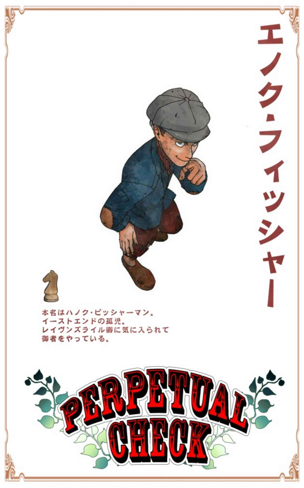

| Perpetual check 1 | |
| 荒雲ニンザ | |
| (2018) | |
Perpetual check
目次
この物語はフィクションであり、
実在の人物・団体・国家・宗教・事件には一切関係ありません。
１ 匂い立つ美男
全ての記憶を失った。
19 世紀後半――ロンドン郊外。ハイゲイトにある貴族の町屋敷 で、不幸な事故が起きた。
エントランスホールまでゆるやかに壁を伝った麗々しい階段で、足を踏み外した使用人が一人、大怪我をしたのだ。
この物語は、アリソンという名の近侍 が日記に残した、１８８０年の出来事である。
１８８０年――７月 14 日(水曜日)。
今、この日記を所持品の中から見つけて、続きを書き記している。
一つ前の日付を遡ると 10 日だ。私は４日の間、意識をなくしてベッドで寝ていたらしい。
目が覚めたのは、今から数時間前。何が起きたのか分からず、ずっと放心していた。それ以前のことを、何も覚えていなかったからだ......。
どうやら私は、記憶を失ってしまったようだ。
なくした自分を探そうとしているうち、チェストの中からこの日記を見つけた。文字が読めるのに気がつき、過去を辿ってみている。
日記は、１８７９年の５月から書き始められていた。唐突に始まっていることから、これより前を記した別の日記があるはすだ。
以前の日記を探して部屋の中をかき回していると、クロゼットから鏡が出てきた。
象牙色の肌、黒い瞳、黒い髪、これが私だった。
一通り室内を探してみたが、以前の日記は見当たらなかった。
どこにあるのだろう。記憶のない私にはそれが分からない。
探さなければ――
そうしてアリソンは、日記を片手に個室の扉を開けた。
「わーっ !? 」
開けた矢先、目の前に長身の美青年が水の入った洗面器を持って立っていた。思わず二人で悲鳴を上げ、互いに身を引く。
「ア――アリソン !! いつ目が覚めたの !? 」
誰だ。
「動いて平気なの !? ......いや !? だ、だめだよ、ちょっと待ってて、今ケンプソンさんに報告してくるから !! 」
彼は水の入った洗面器を床に置き、アリソンにもう一度念を押して部屋に居るように告げてから、中央の階段を駆け下りていく。
残されたアリソンは足音が遠退くのを聞いていたが、なくした自分を探そうとする意識が強すぎてしまい、夢遊病者のように歩き始めると、その階段を裸足でひたひたと下り始めてしまった。
一つ下りた先の廊下から日の光が満ちる方向へ進み、バロック様式の美しい装飾が施された扉の前で足を止める。
何故だろう、この扉の向こうが気になって仕方がない。
誘われるまま重い扉を慎重に開くと、外からの光で室内の家具が白く照らされた。
黄金の霧を垂らした天蓋付きのベッドは、光を受けて上質なシルクを輝かせている。
その柔らかな羽布団の上に、誰かが横たわっているのが見えた。
そこに誰がいるのか記憶にないはずだ。なのに、その眠る人物に激しい執着を覚え、身体が前に進むのを止めることが出来ない。
そしてその顔を覗き込み、心を奪われて息を呑む。
年の頃なら 30 代前半。若葉の頃を抜け、樹冠に知識をつけた大人の色気が匂い立つ壮年の美丈夫が眠っていた。
乾いた麦の穂のように赤みがかってくすんだ金髪、横からのシルエットを引き立てる真っ直ぐな鼻と、長身でスマートな体格は優雅であったが、つきまとう軍人のような雰囲気がいやにストイックに見える。
どうしてか鼓動が早まり、アリソンは動揺して数歩後ろに身を引いた。
影となっていた身体が移動し、ベッドに白く日がつくと、寝ていた紳士は小さく唸って薄目を開ける。
「う......誰だ――」
狼の毛色のようなアッシュブルーの瞳。余程日の光が眩しいのだろう、ベッドの端の影に逃げ込もうとする紳士を目にした時、アリソンは思い出したように扉に走り出してその隙間を閉じた。
「アリソン......？」
背後からそう声をかけられ、振り返る。先ほどの青年も自分のことをそう呼んでいた。
「......私は――アリソンというのか」
実感が湧かないといった様子で、呆然と扉の前に立つアリソンを見て察したのだろう、壮年の紳士はベッドから身を起こすと手を差し伸べた。
「アリソン、大丈夫だ。さあ、こちらに来なさい」
彼は一体何者だ？
もう一度手を伸ばされ、来るように促される。
アリソンは上目遣いに確認しつつ、ゆっくりとベッドの近くに歩を進めた。
宙に浮いていた手がベッドに振れ、ここに座るようにと指示される。どうしようか躊躇したが、紳士が緩やかに口元をほころばせているのを見ているうち、大人しくそれに従ってしまった。
「......その様子では、私を覚えていないな？ どこまで記憶を失ってしまった？」
彼は、何かを見透かしている。
「......何も分からない......」
紳士はアリソンが手にしている日記に気がつき、静かに口を開いた。
「その日記に、私のことは書いてあったか？ ヴェルノ・ライアン。ブロードハースト伯爵という人物が、私のことだ」
「わ、分からない......」
「ふむ......そうか、残念だ。できれば、そなたの良き主でありたいと思っていたのだが、書いていないか......」
「貴殿は、私の主なのか？」
日記の内容を思い返し、幾度と書かれた『我が君 』の文字を思い出す。
「貴殿が、我が君......」
大人げなく些細なことに拗ねそうだったヴェルノは、寸前でそれを回避できたようだ。もう少しアリソンが傍に座ってくれていたらと、届かない手持ちぶさたの手が寝乱れた髪をかき上げる。
扉の向こうがいやに慌ただしい。
「どうやら、使用人達がそなたを探しているようだ」
「あの部屋には戻れない。私は自分のことを探さなければ――」
アリソンの落ち着きがなくなると、ヴェルノは宥めるように名を呼んでやる。
「アリソン、心配しないで良い。この屋敷の者たちは、そなたを悪いようには扱わない。元々皆、そなたの仕事仲間だ。そなたを心配して探しているだけのことだ」
「戻りたくない。あの部屋には日記がない......」
「日記なら、そなたが今手にしている」
「もっと前の日記だ。そこには私の忘れた過去が記されているはず......」
「アリソン――」
ヴェルノの形の良い眉が少しだけ下がった。
「アリソン、知りたいことは皆が教えてくれよう。そもそも、そなたは何故記憶を失っているのか、それすら分からないだろう？ 日記に書いていないことなど山ほどあるのだ。それを皆が教えてくれる」
そうだ、ヴェルノの言うとおり、何故記憶を失っているのかアリソンは知らない。
「......貴殿は、私が記憶を失った理由を知っているのか？」
「屋敷の者たちは皆知っている。大騒ぎだったのだぞ。階段から勢いよく転げ落ちて、屋敷中パニックだった」
だが、身体はどこも痛まない。
「ヴェルノ、貴殿は嘘をついている」
と、そこでヴェルノの目が見開かれる。あまりに奇妙な表情をするもので、アリソンは言葉を続けるのをやめてしまった。
「な、何だ」
「いや――」
そう口ごもったヴェルノは口元を隠しているようだが、照れている様子にも、喜んでいる様子にも見える。それがいかにも訳ありな様子だと、アリソンの羞恥心を突いてしまった。
「何だ！」
「アリソン......いいか、私のことは、我が君と呼べ。人前で私のファーストネームを口にしてはならない」
まあ、それはそうだろう。アリソンの主がヴェルノであるなら、それ相応の敬意を払わなければならない。
「そなたは私の近侍 だ。それと、敬語を使え。他の使用人達にこんな口を利いているところを見られたら、大変なことになる」
とは言え、今のアリソンには 19 世紀の大英帝国についての記憶がない。しきたりも覚えていなければ、対処の方法も分からないでいる。
どうしていいか判断ができずに拗ねて下を向いたアリソンが、また過去の日記を探すと言い出しそうで、ヴェルノはベッドから抜け出るとその隣にあぐらをかいた。
先とは違い、手を伸ばせば届く距離。暗がりに浮かび上がるその輪郭をまじまじ眺め、ヴェルノは目を細めた。
まるで少年のように華奢で小柄な体型。幼い顔つきは幼年期にありがちのあどけない美しさをそこに留めていたが、象牙色の肌についた筋肉の影はアリソンが青年だということを示している。
それはヴェルノとも似ても似つかず、アリソンがこの国の者ではないということを証明していた。彼は東洋人だ。
今のアリソンは、何故東洋人の自分がイングランドにいるのか、それすら気がつかないでいる。そしてヴェルノは、あえてそこを語ろうとしていなかった。
ため息をつきたくなるほどの美しい男に間近で長々と見つめられ、気恥ずかしさに耐えられなくなったアリソンは、今ヴェルノから言われたことも忘れて再び無礼を口にする。
「だ、だから、何なのだ！ 先から貴殿は......！」
自分の主だという紳士は、近侍の方に身を寄せた。
「本当に全部私を忘れて、恨みがましい気持ちがない訳でもないが......それでも私は、何度でもそなたのことを――」
と、そこで言葉を止める。
アリソンが熟れたトマトのごとく赤面をして、すさまじい勢いで目を泳がせているのを見たヴェルノは、困ったような笑みで口を開いた。
「とにかく、ケンプソンに知らせなくては。あの足音で屋敷中歩き回られては、いつ伯父上を起こしてしまうか分からない。我々の起床時間は夕方。覚えておくんだ、アリソン」
それだけ言い残し、ヴェルノはアリソンに触れることもなく立ち上がると、バトラーズベルを鳴らした。
１８８０年――７月 14 日(水曜日)――追記。
この屋敷には、私の他にも生活している者たちがいた。
幾人もの使用人たちが、貴族と呼ばれる主人の面倒を見ているようだ。
遡った日記を探したかったが、彼らに阻まれてしまい、断念せざるを得なかった。
彼らが、階段から落ちて記憶をなくした私のことを助けてくれたらしい。
恩のある手前、彼らの言うことを聞くのが筋というもの。しばらくは大人しくして、機会を窺おうと思う。
この屋敷には、ヴェルノ・ライアンという男がいた。二つ名があり、使用人たちからはブロードハースト卿と呼ばれている。
彼はこの日記によく書かれている『我が君』だった。
文字にできない。人とは思えぬほどの美丈夫だ......。
彼は私を混乱させることばかりする......。以前からそうだったのだろうか？
この一つ下の階に、彼がいると思うだけで落ち着かない――
２ ハーレムの扉
この屋敷では、昼夜が逆転しているようだ。
夕刻になると屋敷は慌ただしく動き始める。昼にはほとんどなかった人の気配が、日が沈んだ辺りから四方に広がり始めたのをアリソンは感じていた。
目を開けてベッドに横になっていると、ノックが彼を振り向かせる。
「僕だよ、入っていい？」
この声は、アリソンが意識を失っている間、看病をしてくれていたデーヴィッドという従僕 のものだ。目が覚めた時、ドアの前で洗面器を持っている彼と鉢合わせしたのを覚えている。
中に招き入れると、見栄えの良い仕着せを着用したスマートな青年が、人なつこい笑顔をアリソンに向けた。
「良かった、ちゃんといてくれた」
整えたプラチナブロンドが光に輝き、切ったオレンジのような口元から歯並びの良い前歯が見える。質の良い翡翠の瞳はどこまでも透明で、絵から抜け出たような長身の美男子は目に眩しい。
「あのね、ブロードハースト卿が、お医者様を呼んで下さったんだ」
そうデーヴィッドが身を引くと、背後から暗雲が漂った。
かなりの長身、デーヴィッドより頭一つ飛び出るような大柄の男性が、部分的に甲冑をつけた重い身体を揺らして扉の向こうから現れた。
「やあーアリソン」
明るく声をかけられたが、アリソンはベッドから飛び起きると身を構えた。
顔の左半面を覆う黒い眼帯、加えて右腕が肩から金属で覆われ、甲冑のようなそれは不自由ない様子で手を振った。
右脚は、見えている部分だけで判断するのなら、膝から下がない。金属の棒が一本支えているだけで、おそらくは右足大腿部の付け根からないのだろう。
医者というより、どう見ても負傷兵だ。
「キミは覚えてないだろうけど、私はドクターケネディ。キアラン先生って呼んでくれてもいい」
キアランは愛想よく喋るが、無表情のまま口だけを動かす。顔を負傷しているので筋肉を動かせないのだろうが、血走った隻眼は見ていてあまり気持ちの良いものではない。それに加え、白髪が人間離れした顔立ちにマッチして、異様な雰囲気を醸し出している。
絶句しているアリソンにデーヴィッドが声をかけた。
「大丈夫だよ、こう見えてすこぶるまともな性格の方だから。腕の方も確かだし、心配しないで。昔からこの屋敷の主治医をして下さっているんだよ」
深みがかった紺色のクロッカスのように凛として、それでいて柔らかい春のような雰囲気のデーヴィッドと、負け戦で戦場に捨てられ、そのまま雨風に晒されて朽ち果てた大砲のようなキアランとでは、対照的すぎる。
そんなキラキラしたデーヴィッドに危機感なく心配するなと言われても、金属の右手を自在に操る医者を前にして、不安になるなという方が無理な話。
気後れしているアリソンを放置し、キアランはお構いなしに椅子に座ると、さっそく診察を始めた。
何が楽しいのか、医者の鼻歌が低音の振動となって伝わってくる。だがその顔は笑ってもいない。こちらとしては、ただ、ただ気持ちが悪い。
アリソンの関節を念入りに確認し終わると、キアランは彼の黒い瞳に視線を向けた。
「どこか痛い？」
「......いや、別に......」
「おかしいと思ってるだろう、階段から落ちたのに、どこにも怪我がないって」
確かに。それでアリソンは、ヴェルノを嘘つきだと言った。
「まあ、本当に大怪我はしていたんだけどね。その訳は、もうちょっとしたら教えてあげよう」
この医者は、食えないところがある。もしかして、彼ならアリソンの知りたいことを教えてくれるかもしれない。
「......気になっていることがある」
「何だい」
「もしかして私は、以前にも同じように、記憶を失ったことがないか？」
「さすがアリソン。頭の回転は変わっていないようだ。相変わらず察しがいい」
やはり。
ヴェルノにせよ、デーヴィッドにせよ、このキアランという医者にせよ、アリソンの記憶がないことをはなから承知しているようだった。それは過去に一度ないし複数回同じことを経験したからであり、そこから来る余裕が彼らをそうさせたのだとすれば辻褄も合う。
「私は......その――記憶障害か何かの病なのか？」
「そういうわけでもない。まあこれは種の特性というものだ。それについても、追々分かるだろう」
「何故教えてくれない？」
アリソンのその率直な質問に、キアランは血走った隻眼を向ける。
「この屋敷の者達は、普通と違うからさ」
「どういう意味だ......？」
「まず貴族だ」
それについては、アリソンはまだよく分からない。
「この国の貴族制度はややこしいから、覚えるのが大―変。キミは今こんなになっちゃってるけど、記憶を失う前はヴェルノ――ブロードハースト卿の近侍だったんだ。使用人のお仕事も、その面倒くさいシステムと密接に関係してくる」
キアランの金属の腕が動き、後ろで聞いているデーヴィッドを指し示す。彼もそうだと頷いている。
「次に、ここの領主はブロードハースト卿ではない。彼の伯父、レイヴンズライル卿がこの屋敷の主だ。１つの屋敷に二人の伯爵、おかしいよね。でもホラ、キミはそのあたりの変なこと、記憶がないから分からない」
確かに。
「他にもまだまだ普通じゃないことはあるけど、キミは気がつけないんだ。だから『今は』教えられない。そう言っているだけのこと。別に意地悪している訳じゃない」
キアランの言うとおり、アリソンは生活というもの自体を失ってしまっている。過去を受け止めるために、まずベースを取り戻していかねばならないということだろう。
「......理解した。確かに貴殿は、中々の医者のようだ」
「そりゃどうも」
「私はまず、この屋敷に慣れることから始めるとしよう。デーヴィッド、私がやるべき仕事を教えてくれるか」
クロッカスのような従僕は花のように笑って答えた。
「もちろんだよ」
「アリソン」
名を呼ばれてキアランに振り向くが、彼の表情筋は相変わらず動かないままだ。
「くれぐれも言っておくけど、ボクにも治せないものはある」
「腕が良いと言っていたのに」
「失った記憶は戻せないってことさ」
金属で身体を被った医者は、無表情のまま低い声だけで「フフ」と笑い、診察を終えて椅子から立ち上がった。
キアランがデーヴィッドに先導され、アリソンに見送られながら個室を退出した後だ。階段を降りたところで、弾力ある声が医者を呼び止めた。
「キアラン、久しぶりじゃないか」
背後からの声にキアランの足が止まり、舌打ちと小声が漏れる。
「最後に嫌な奴と会った」
「なんだって？」
どうやら声の持ち主にはしっかり届いているらしい。キアランは無表情のままだったが、弾むような声色で社交辞令が始まった。
「ご機嫌よろしゅう、レイヴンズライル卿。今、アリソンの診察を終えて戻る所でした。帰る前にお会いできて光栄です」
「相変わらず、心にもないことを楽しそうに口にするようだな。まあ、お前の悪態を聞けて、私としては嬉しいところだが」
あまり仲がよいとは言えないらしい。
レイヴンズライル卿と言っていた。彼がこの屋敷の主人ということになる。
アリソンは階段の上から一つ下の階を覗き込んでみたが、段差が邪魔をして彼の足下と金のステッキしか見ることが出来ない。手すりで身体を支え、その声の主を確かめようと身を乗り出した。
だがその時、間の悪いことに『ヤツ』が来てしまった。
チャカチャカと爪が床に触れる小さな音がこちらにやってくる。それは４本足の、黒光りする猟犬だった。
どこから使用人部屋のある廊下に入り込んだのだろう、体 高 39 インチはあろうかという超大型犬がゆっくりと狭い廊下を歩いてくる。アイリッシュ・ウルフハウンドにも見えるが、その姿がはっきり分からない。目を患っているのか、燃えるような赤い瞳が二つこちらを見つめていた。
可愛いとは言い難い。どちらか言うならば恐ろしい。立ち上がれば長身のキアランですら身長を超されそうだ、小柄なアリソンならばお気に入りの玩具のように持ち運ばれて土に埋められよう。
不運は重なるものだ。猟犬から逃げようとしたアリソンは、階段の手すりに寝具の裾を引っかけ、その場で足をもたつかせると壁に背をつけた。
「誰だ、何をやっている」
物音でレイヴンズライル卿が声をかけると、上の階から愛犬が顔を見せる。
「ベガー」
そして当然、聡明なレイヴンズライル卿はそれを察するのだ。口元をほころばせ、金細工のグリップで軽く二度ほど手のひらを叩く。
「ベガー来なさい。玩具を忘れるな」
頭の良い犬だ。アリソンが身につけるシャツの裾を引き、階段を降りようと巨体を揺らし始めた。
「う、うわっ......」
その悲鳴を聞き、たまらずデーヴィッドがキアランの袖を掴んだ。仕方ないといった様子で医者が助け船を出してやる。
「キュー、医者のいる前で患者に怪我をさせないでくれ」
「何度も言ってるだろうキアラン、使用人がいるのにその愛称で呼ぶな！」
どういった仲か分からないが、それでレイヴンズライル卿の意識が逸れたのは確かだ。
「ベガーはアリソンがお気に入りなのだ、遊ばせてやるくらい良いではないか」
レイヴンズライル卿は階段を上り、アリソンのいる階へと姿を現す。
そして屋敷の主の姿を一目見たアリソンは、息を呑んで目を見開いた。
そこにいたのは、ヴェルノだ。否、正しく言うならば、ヴェルノに生き写しの別人であった。
50 程度の歳は重ねていたが、年輪を重ねた深みが逆に彼の魅力を一層引き立てて見える。
軽く後ろに撫でた白髪混じりの赤毛は血の色で、描いたように通った鼻、深い彫りに埋もれた碧眼が演出する強面は、今でも万人の視線を奪って離さない。
目尻についた小さなしわでさえも美しく見えてしまうのだ、若かりし頃の面立ちをしっかりと残した輪郭は彫刻のようですらある。
男性らしい逆三角形の体格は一見たくましく映るが、バランスの取れた長身が彼をスマートに見せ、物腰の優雅さと合わさって惚れ惚れするようだ。
「アリソン、目を覚ましたのか。心配していたのだぞ」
「あ――」
アリソンはひどい動揺をしている。記憶にない人物が、知ったヴェルノと同じ顔を持っているのだ、混乱する脳が彼の動きを封じてしまったのも無理はない。
レイヴンズライル卿はそれを承知でアリソンの傍に歩み寄る。
「私を覚えていないな。クエンティン・サリヴァン。レイヴンズライル伯爵だ。その様子では、甥のヴェルノに会ったな」
見透かされている。ヴェルノよりフェロモンの強い伯父の視線は、アリソンに得も言われぬ羞恥を抱かせた。
身につけている質素なシャツの襟元を見つめられ、滑らかな象牙の肌を隠すように合わせを手繰り寄せる。顔が火照り、今自分は赤面しているに違いないと自覚して、逃げ場もなく俯いた。
「熱があるようだ、アリソン」
「――い、いえ......」
レイヴンズライル卿は低い声で微笑み、手にしていたステッキをアリソンの前に差し出す。
「私を目にした者は、皆そうなる」
そう言い、金細工のグリップを軽く彼の肩口に押し当て、その胸元までをゆっくりとなぞりながら滑り落とした。
身体が痺れ、たまらずアリソンがそれを払いのけると、潤む瞳を確かめたレイヴンズライル卿は満足そうに口元をほころばせた。
そこでキアランが金属の足を踏み鳴らす。
「はい、ドクターストップ。お前は必要以上にアリソンに近づくな」
医者の忠告に、不服の態度で応えるレイヴンズライル卿。
「何故」
「アリソンが混乱する。自分の主と同じ顔をしている男が屋敷の主人だぞ、記憶が一本に繋がってしまったらどうする」
「ヴェルノと私は血が繋がっているのだぞ、似たようなことをしているはずだ」
「お前と一緒にするな」
レイヴンズライル卿はつまらないといった様子で、ため息を一つ宙に投げた。
黒い猟犬は玩具から離れ、主人の傍へ移動する。アリソンは足元が解放され、ほっと息をついた。
「もしかして、ヴェルノは仕事か」
キアランの質問にデーヴィッドが頷く。
「はい、明け方までお戻りになりません」
「それはピンチだな」
キアランとデーヴィッドの両者から見つめられ、レイヴンズライル卿が肩をすくめる。
キアランが金属の指を屋敷の主人に向けた。
「キュー、デーヴィッドに外の仕事をやれ。アリソンは社会見学が必要だ」
「単に私から離したいだけだと言えばいいだろう」
「分かっているのに言う必要があるか？ 一石二鳥なんだ、今晩は二人とも外にやれ」
貴族より医者の方が上なのかとアリソンが誤解しそうになるほど、キアランはずけずけとものを言う。
レイヴンズライル卿は少し考えてから、頷いた。
「だが......まあ、そうだな......最近新鮮な素材を口にしていないし、そろそろデーヴィッドに買い出しに行ってもらうのも悪くない」
「ハイ決まり」
レイヴンズライル卿の気が変わらないうちにでかけようと、キアランはデーヴィッドにアリソンを任せて階段に立ちはだかった。
それを見た当家の主人は不服そうである。
「ここは私の屋敷なのだが」
「やんごとなきお貴族様が、使用人が寝泊まりする屋根裏部屋なんぞに来てはいけませんぞ」
隻眼の医者は、無表情のまま笑って彼を追い払った。
１８８０年――７月 14 日(水曜日)――追記。
デーヴィッドという従僕が、意識のない私の世話をしてくれていた。
彼はとても親切で、話しやすい。誰からも好かれる雰囲気がある。それにとてもハンサムだ。
彼とは仲良くやっていけそうで安心している。
デーヴィッドが、医者のキアラン・ケネディを連れてきた。この屋敷の主治医だそうだ。
当初はその外見に驚いたが、意外にもドクターキアランはまともな性格だった。
隻眼に片腕、片足......一体何故あのような大怪我をすることがあったのだろう？
癖のある人物であったが、医者としての腕は良いらしい。
ヴェルノの伯父だという、レイヴンズライル卿にも会えた。
彼こそ、この屋敷の主だ。
彼は少し年を重ねたヴェルノにしか見えない......。生き写しのようだった。
しいて言うなら、年をとっている分、レイヴンズライル卿の方が色気はある......。
私に妙な態度をとって困らせようとしてくるところは、二人ともそっくりだ。
そうだった。ヴェルノではない。『我が君』と呼ぶように言われていたのだった。
忘れてうっかり名前を呼ぶことがないよう、日頃から慣れておかねば。
我が君。我が君。我が君。

３ 深淵の町
これからロンドンの町に出る。
キアランを近所の病院まで送迎し、そのままデーヴィッドと共に町で使いをして帰る予定だ。
デーヴィッドが屋敷の食料を調達するのはいつものことらしく、訳あって町に出られないメイドたちに代わって買い物をしているという。かさばるものは注文で直接屋敷に届けてもらうので、町でしか手に入らない物資を仕入れるのが仕事らしい。
アリソンは寝具から普段着に着替え、屋根裏部屋の裏手にある階段を下りていく。途中、レイヴンズライル卿がいないかと冷や汗をかいたが、一階の階段付近で普段着のデーヴィッドが待っていてくれていた。
使用人は裏手から出る。表に回ると、執事 らしき人物に案内されているキアランが馬車に乗り込もうとしている姿が見えた。
正面玄関を目の当たりにしたアリソンは、象牙と濃紺の色調で整えられたバロック様式の建築に目を輝かせた。細部に渡って優雅な彫刻が施されている柱は、それは見事なものだった。
そこに、双角が施された黄金の甲冑を身につける二頭の黒馬が、金の家紋が扉にあしらわれた赤と黒の四輪馬車に繋がれている。そして馬車の中から漏れるランプの光が、扉のエンブレムを浮かび上がらせていた。見る者が見れば一目で分かるそれは、レイヴンズライルのものだ。
そのままキアランと同乗し、庭を大回りして暗い森の中へ入っていく。
「何であいつの悪癖は治らないんだ？」
医者の小言を聞きながら、デーヴィッドがそれに小さく笑っている。アリソンは窓から初めて見る『世界』を眺め、ぼんやりと視線を流していた。
日はとうに沈んでいる。
レイヴンズライル伯爵の見事な屋敷は、惜しむらくも奇妙なことに、深い森にひっそりと隠されているらしい。まるで人の目につかぬ場所にわざわざ建てられたかのようだ。
森を抜けると、路地の先に灯りが見えてくる。どうやらキアランが勤める病院についたらしい。
大きな病院だが、隔離されているようだ。
キアランと別れを告げ、そのままロンドン市内に向けて馬車を走らせる。
アリソンは興味深く外を眺めていたが、次第に周囲が白く濁り始めてしまい、先を見通せなくなるとため息をついた。
「霧が出てきた......」
そう呟くと、デーヴィッドも窓の外に目を向ける。
「霧じゃないよ、スモッグさ。工業の副産物みたいなもの」
それが何なのか、まだアリソンには理解できない。そのまま白い『霧』の中、ガス灯だけを頼りに町外れのパブまでやってくると、馬車は前の広場で走るのをやめた。
窓から覗く『世界』は、薄汚い。どこも壊れそうな家だらけ。灯りのついた１つのパブ以外、他の店は全て締め切っている。
垢と埃にまみれた人々は安い酒で悪酔いし、路地の隅に転がっていた。また他の者達は机を出して賭け事に勤しんでいる。
レイヴンズライル卿の屋敷と、この『世界』があまりにも違いすぎて、アリソンはそれをただ呆然と目に入れていた。
外からのノックにデーヴィッドが鍵を開ける。
「ありがとうエノク」
扉の向こうに、 13 ～ 14 の少年がいる。中のアリソンと目が合うと、彼は歯を見せて笑いかけてきた。
「アリソン、早く降りなよ」
「あ......ああ」
この少年もアリソンを知っている。周囲の人間と同じ身なりには見えないところを見ると、おそらく彼が屋敷の御者 なのだろう。
仕着せで身なりを整えてはいたが、どう見ても下町の子だ。ママに隠れてホイップを舐めそうな悪ガキの顔立ちは、年齢共々とても貴族の御者には見えない。
エノクと呼ばれた少年は、熟れたオリーブ色の前髪をフと息で避けてから、アリソンを眺めて腕を組んだ。
「なあ、記憶なくしちゃったって本当か？」
「え、あ、ああ......本当だが......誰から聞いた？」
「さっき、ブロードハースト卿を仕事にお送りする時、教えてもらった。アリソンの目が覚めたけど、記憶をなくしているから、いつもと勝手が違うだろうけど、よろしく頼むって」
「そうか......」
ヴェルノが細かいところで気を回してくれているのだと知り、アリソンの頬が自然と熱くなる。
デーヴィッドがパブの中を覗いて言った。
「じゃあ僕、ちょっと行ってくるから。二人とも、ここで待ってて。何が食べたい？」
「肉！」
エノクにはいつものことらしい。アリソンは首を傾げてデーヴィッドに問うた。
「私は手伝わなくていいのか？」
「いいのいいの、ここでエノクとのんびり夕飯摂って待っててよ。しばらくしたら戻るから心配しないで」
そう言ってポケットからパイプを取り出し、彼は颯爽とパブの中に消えていった。
エノクは御者台に飛び乗り、アリソンに手招きをする。隣に座らせてもらい、少し高い位置から白く霞む街の中を眺めた。
物騒な周辺、少々アリソンとしては不安な気持ちがある。逆に、エノクは大層ご機嫌な様子で口を開いた。
「たまにさ、デーヴィッドがこうやって旦那様から言いつかって、パブに仕事に来るんだ。その時はオレ、こうやって外で待ってるんだけどさ、この辺りも治安悪くてよ。ガキ一人だと結構怖いわけ。まあ、オレも下町の人間だから、何とかなるっちゃなるんだけど。でも今日はアリソンが一緒だから、気が楽だぁー」
たくましい。
「だってよ、今日みたいな仕事の時はご主人様から金が出て、何食ってもいいから、ラッキーデイなんだよ。怖がってらんねえだろ？」
「フ......そうだな」
素直な子供に、思わずアリソンの笑みがこぼれる。それを重ねて消すように、店の中から豪快な笑い声が響いた。
視線を戻すと、エノクがアリソンの顔をまじまじと見つめているのに気がついた。
「どうした？」
「記憶がなくなったのに、あんまり変わんねえなと思って」
「そうなのか」
「なあ、何も覚えてねえの？」
「ああ......。日常的なことはできるのだが、それに繋がることを何も覚えていない。人も誰だか分らない。ここがどんな場所なのかも分らない......」
「日記書いてたんじゃなかったっけ？ それ読めば？」
「そのようだが......肝心の日記が見当たらないのだ。自由に動けるようになったら、探そうと思っている」
少年は「ふーん」と言ってから口を尖らせた。それを見ているうち、アリソンの中に小さな罪悪感が生まれた。
「すまない......その、貴殿のことも忘れてしまって......」
「まあ、仕方ねえじゃん？ 気にしてねーし。なんなら、聞きたいこと教えてやるぜ？」
それはそれでありがたい申し出だ。屋敷の中にいる時には聞けないことが多い。
「エノクと言ったな。屋敷に勤めて長いのか？」
「ううん、１年くらい。元々はイーストエンドで毎日日銭稼いでウロウロしてたんだけど、レイヴンズライル卿に拾ってもらったんだ。まあ、財布がご縁ってやつで」
「あの方は、意外に......慈善活動が好きなのか？」
「悪い人ではないと思うぜ？ 何せ、オレが財布スッたのに、雇ってくれちゃってるんだもんよ」
「スる？」
「盗ったの」
「レイヴンズライル卿の財布を？ 貴殿が？」
「結構やるだろ？ あのご主人様からだぜ？」
怖いものを知らない年代がしでかす行いというものが、良いのか悪いのかはさておき、エノクはラッキーであったということだ。
そこで店からデーヴィッドが料理と酒を持ってやって来た。
「おまたせー、じゃあ、ゆっくりやっててね」
ほとんど黒焦げの油ぎった料理を御者席の上に置き、直ぐさま店に逆戻りするデーヴィッド。エノクは大喜びでそれをほおばりはじめた。
とりあえず手渡された酒を口にしたアリソンだが、思い切りむせってそれを置く。
「勤めて１年じゃ、屋敷のことはあまり知らないか......」
「オレが入れる場所は、庭と、馬小屋と、キッチンの裏側あたりだけ。お屋敷の中なんて見たこともねーし。知ってる人は、レイヴンズライル卿と、ブロードハースト卿、デーヴィッドに、執事のケンプソンさん。あとは見たこともねえ」
「町の人達は出入りしないのか？ その......例えば、食材なんかを運んできたり」
「伝染病患者を収容してる病院と、ハイゲイト墓地がすぐ横にあんだぜ？ 気味悪がって誰も近寄んねえよ、あんなトコ。配達は大体オレがやってる」
確かに、あの森は人を避けていた。
レイヴンズライル卿は貴族ではないのか？ 裕福な暮らしと隣り合わせ、何故あのような陰湿な場所に屋敷を構えたのか。
人の話を聞く度、記憶に色がつくかと思えば、どんどん訳が分からなくなる。
「そういえば......今の時間、ブロードハースト卿は仕事に行っていると聞いたが、ロンドンに来ているのだろうか」
「いや、あの方はいつもハイゲイト墓地に着くと降りちまう」
「何故そんな場所で？」
「さあ。あの辺りも自分トコの土地なんじゃね？ ブロードハースト卿が何の仕事をしてらっしゃるのか、オレも知らねーし」
「じゃ、じゃあ、今も我が君は墓地に？」
「どこにいるかは分かんねーよ。降ろしたのは墓地の入り口だけど。今日もここに来る前、いつも通りオレが送って行ったよ。明け方になる前、迎えに行くのが決まりだ」
エノクは何とも思っていない様子で一言付け加える。
「あそこ通るの、マジで怖えーんだぜぇー？」
「か、彼は貴族だぞ？」
「オレにそんなこと言われたって分かんねーし。貴族が何やってんのかなんて、縁が遠すぎちゃって興味ないもんよ」
アリソンが混乱していると、エノクが続けた。
「まあー......でも、他の貴族に比べりゃあ、レイヴンズライル卿はマシかな」
「マシとは......？」
「労働者階級でもクソみたいに下の奴らは、結構あの方を好いてる奴が多いんだぜ？ 深淵を覗き込むのはあの方だけだ、ってね」
「深淵......？」
「スラムの奴らのこと。金持ち連中はパフォーマンスはするけど、マジでオレたちのことなんか気にしちゃいねえもん。でも、レイヴンズライル卿は酔狂な方で、犯罪者ばっかりで危ねえからって言ってんのに、オレたちの中に喜んで入ってきて、仕事くれんだ。要するに、金落としてくれるスポンサーってコト」
それからエノクは、鼻を人差し指でこすってから、照れくさそうに口を尖らせて言った。
「オレは、結構好きだぜ、ご主人様のコト」
アリソンの頭は、この話についていけていない。少しずつ入る知識が、指南書に記された常識をめちゃくちゃにしている気分だ。
ふと、視界の端に入ったデーヴィッドに振り向くと、パブの裏手にある物置小屋に目がいった。そこで彼が同じ年くらいの若い女性と、今晩の別れを告げているシーンを目に入れてしまった。
彼女があまりにも恋に輝いて見えたので、アリソンは見てはいけないものを目にした心境になり、慌ててそこから視線を外した程だ。
「ただいまー」
デーヴィッドには気づかれていないらしい。彼はいつも通り花のように微笑み、何事もなかったかのように二人に手を振って馬車へと戻って来た。
「オッケー、戻ろう。そろそろブロードハースト卿をお迎えに行かないと」
エノクは骨を口に咥えたまま皿を店の入り口に戻しに行き、二人が乗り込んだのを確認すると馬を走らせた。
今見たことは黙っていよう。アリソンはそう思い、動揺を誤魔化すように窓の外――深淵の町ロンドンを眺めた。
真っ白い『霧』は、汚れた人々の姿を覆い隠している。
森に入り、ハイゲイト墓地に着くと、門の入り口でヴェルノが馬車を待っていた。
こんな真っ暗闇の墓地を背後に、よくランプ片手に一人で立っていられるなと、見ているこちらが寒々してしまう。
「すみません！ お待たせしてしまいました！」
御者席にいるエノクに視線を投げた後、馬車の中にいるアリソンとデーヴィッドに彼は驚いた。
「何故二人がここにいる」
「道中ご説明します」
まずはヴェルノを乗せ、馬車を屋敷へと向かわせる。その途中でデーヴィッドが訳を話すと、案の定彼はため息をついた。
「伯父上め......」
「でも、ドクターケネディのお陰で、アリソンはこの通り無事ですし......」
苦笑いしているデーヴィッドの横で、よく理解していないながらも何かを察しているアリソンが俯いている。
ヴェルノはアリソンの様子を窺いながら言った。
「アリソン―......できる限りでいい、伯父上の近くにはいくな。伯父上はその――些か、いや......かなり、品行が悪いのだ」
要するに、手が早いということだろう。先ほどデーヴィッドと女性の恋模様を見てしまったアリソンとしては、今この話をしたくない。
「伯父上の悪い癖なのだ。若い頃からずっとあの調子で、屋敷の者達も手を焼いている。伯父上は人を弄ぶのが好きなタチの悪い性格で、弱みを握っては言うことを聞かせようと手を回す。そんな人物でも、あの厄介な容姿のせいで、男女関係なく人が寄ってきてしまうのだ。だが誰かに心を寄せることをしない。そのくせ肉欲には盛んで――ああ、すまない。こんな下世話な話はそなたの前でしたくないのだが......」
長年の鬱憤がたまっていたらしい。饒舌でそこまで話すと、「とにかく」と話を切り上げた。
「伯父上のやることは、面倒なことしかない。関わり合いになるんじゃない、いいなアリソン」
「は、はあ......」
とは言え、あのレイヴンズライル卿が放っておいてくれるとも思えない。アリソンは隣に座るもう一人の美男子を見た。
「デーヴィッド」
「ん？」
「参考までに聞きたい......。貴殿はどうやってレイヴンズライル卿から距離を置いている？」
ああ、と彼は苦笑いを向けた。
「レイヴンズライル卿にも好みのタイプがあるみたいで、僕はそれから外れているみたい。しいて言うなら、いじった時の反応がおもしろい人が、よく目をつけられてるかなーとか」
確かに、デーヴィッドは素直すぎて、彼には物足りなさそうだ。逆に、自分はおもしろいタイプに入っているのかと憂鬱になる。
同じ顔の甥に目を向けると、彼はこちらを睨んだ。
「何だ」
「いえ......何でも......」
気は重いまま、屋敷が見えてきた。
１８８０年――７月 15 日(木曜日)。
ドクターケネディの勧めで、デーヴィッドと共にロンドンへ使いに行った。
エノクという御者が手綱を握っていたが、彼はまだ少年で、とても貴族の御者には見えない。
デーヴィッドがパブで仕事を済ませている間、エノクに色々なことが聞けた。
彼がスラムに住んでいること。レイヴンズライル卿の財布を盗んだこと。それがきっかけで御者に雇われたこと。そのレイヴンズライル卿はスラムの人間たちに好かれているらしいということ。
めちゃくちゃすぎて、頭がどうかなりそうだ。
屋敷のことも少しだけ分かってきた。
ハイゲイトの森にあり、墓地と伝染病の隔離施設（ドクターキアランは、そこに勤めている？）が敷地内にあるということ。
そしてヴェルノは、その墓地の入口で毎晩馬車を降りるということ。
ロンドンに住む者たちは、この屋敷を気味悪がり、近寄ろうとはしない。
確かに......ここまでそろえば、その屋敷にいる私でも、気味が悪くて近寄りたいとは思わない......。
日が昇る頃になると、この屋敷は静まり返る。
エノクがロンドンに帰るロバの蹄の音が遠ざかれば、一日が終わる合図だ。
眠い......。一晩中起きて下町にいたのだ、４日寝続けていたとはいえ、さすがに睡魔が襲ってきた。
昼と夜を違えたおかしな生活だ。今まで本当に私はこの生活を続けていたのだろうか......。
そうだ、日記を探さねば。あまりにも慌ただしくて、むちゃくちゃで、すっかり忘れてしまっていた。
今日という日は長すぎた。４日が１日で訪れたようだった。
明日は――訂正。目が覚めたら、以前の日記を探そう。

４ 伯父と甥
あと３時間で日没。
「起きてアリソンー！ 一日が始まるよー！」
むちゃくちゃだ。
デーヴィッドの慌ただしいノックで目を覚ましたアリソンだが、すっかり時差ボケのような状態に陥っていた。
「今日から仕事に戻るんだから、早く支度して下りてきて」
屋根裏の個室は日が入り込まない。しかし身体がこれから夜だと告げているのだ、この肉体の重さが今何時かを教えてくれている。
クロゼットから自分の体型に合った小ぶりの２着を手に取り、どうするべきかで頭を悩ませる。モーニングにするべきか、燕尾服にするべきか、それが問題だ。これから夜がやってくるが、この屋敷では朝......。
ドレスコードはそのままだと教えられ、燕尾服に着替えたアリソンは階段を下りて使用人部屋へとやって来た。
粗方仕事内容はデーヴィッドから聞いていたので、それを思い出しながら分かる範囲の仕事をこなしていく。
ここにきて、初めて執事のケンプソンという人物と顔を合わせた。
人参のように見事な長い鼻、燕尾服から溢れ出んばかりの白髪まじりの剛毛。厳つい顔つきはいかにも気むずかしそうな性格を思わせ、色々と詮索してしまうが故に近寄りがたい。
「お、おはよう......？ ございます......」
「ここでは『こんばんは』からスタートである」
「は、失礼しました......」
「エノクが持ってきた夕刊紙はホールにある。アイロンはそこだ」
礼儀として挨拶はすませてみたものの、二言交わしてそこで終了。業務連絡だけのやりとりは楽と言えば楽だったが、その人物に手際の悪さをじっとり見つめられるプレッシャーは相当なものだ。
それにしても、他の使用人達を見かけない。デーヴィッドが忙しく歩き回っているのは何度と目にしているが、大勢いるはずのメイドの姿がどこにも見当たらない。
だのに室内は整頓され、暖炉の屑炭は取り除かれて隙がなく、美術品には埃一つついていない。
一体彼女たちはいつ仕事をしているのだろう？ 気配はあるのに、姿が見えず。それがアリソンには不思議で仕方がなかった。
下級使用人は空気のように仕事をするのを望まれた。主の前に姿を見せることなく立ち回るというのはこういうことなのだろうかとも思ったが、そんな無茶なと頭を振る。それも当然、アリソンは使用人の一人だ、顔を合わせても支障はないはず。
胸の懐中時計は 19 時、ヴェルノを起こす時間だ。
紅茶を乗せたトレイを持つ手のひらに、若干の汗ばみを感じる。平常心を装っていても、これからあの人間離れした美丈夫に会いに行くのだと思うだけで心拍数が上がってしまう。しかもこれから毎日だ、内心叫んで逃げ出してしまいたい気持ちすらある。
階上の寝室の前にやってくると、大きく息を吸ってから意を決して扉をノックした。
「我が君、時間でございます」
少し間を置いてから、返事が聞こえた。えい、と気合いと共に扉を開いて中へ入り込む。
ベッドの方は確認せず、ティーテーブルに一直線。見ない、見ない、と何度も反復しながら紅茶を給仕していると、不服そうなヴェルノの声が自分を呼んだ。
「主が何を望んでいるのか、見ないでも分るといった様子だな」
頼むから、そう皮肉を言わないでくれ。こちらは緊張と焦りで一杯一杯なのだ。
言葉はさておき、リアクションすら返せず、アリソンはそのまま硬い身体で踵を返すとクロゼットを開けた。
ヴェルノの体格に合わせた仕立ては立派なもので、抱きかかえるように手に取るとフと彼の香が鼻面を撫でる。そこで気が緩み、小さくため息をついてしまった。
「アリソン？ 無理をするな」
まずい、勘違いをされた。ヴェルノは良くも悪くも勘が鋭い。身体の不調と心配されてしまっては申し訳が立たない。
「い、いえ。自らが不甲斐なく......」
「そなたが気に病むことはない」
布擦れの音。まずい、彼がこちらへ来る。逃げ場はなく、このままこのクロゼットの中に逃げ込み、扉を閉めてしまいたい心境に襲われた。
どうすることもできず、観念して背後を振り返れば、絶世の美丈夫は自分の目前。輝かしい尊顔に心拍数が上がりすぎて倒れそうだ。
「着替えるのを手伝ってくれ」
「は、はっ......」
そのアリソンを承知した上で、そう言ったのだろう。良くも悪くも、ヴェルノは勘が鋭い。
何故だか、それが少々......意地悪くも感じた。そしてそれは『狡い』という気持ちをアリソンの心の奥底に生み落したようだ。
これがレイヴンズライル卿であれば、きっと怪しげに微笑みながら身体を引き寄せ――
「うわ！」
一気に広がりそうになったいかがわしい妄想をせき止め、近侍は声を上げる。当然主は驚いて彼に訝しげな表情を向けた。
「何だ」
「いえ......」
見ていてアリソンの態度は痛々しい。カフスをとめる指先が震えて自由が利かず、手から滑り落ちそうになる宝石を幾度かヴェルノは手で受け止めてやった。
やっと着替えを終わらせた時だ。
「アリソン、これを見ろ」
促されるまま、机の横に置かれたテーブルに視線を向ける。そこには豪華な装飾で白と茶の格子柄が書かれた艶やかな面があり、細工の施された白と黒のクリスタルが複数置いてあった。
「チェスを教えてやろう。着替えの度に 15 分私と対戦していれば、その凝り固まった筋肉も解れてこよう」
「滅相もない、主とゲームなどと......！」
「いいから。ここだけの話にして、言うとおりにしろ」
「し、しかし」
ヴェルノは強引にチェステーブルを引き寄せ、革張りのキャプテンチェアにアリソンをムリヤリ座らせた。それから自分は対極に座り、機嫌良さそうに駒の一つを手に取って見せる。
「これが駒。全部で六種類ある。この十字架装飾の王冠がキング。これを取れば勝ちだ」
まずは基本からということで、６種類の駒の動かし方を軽く教わる。そんなやりとりだけで 15 分はあっという間に過ぎたようだ。
「どうだ」
「はあ。まあ、このくらいならば容易いかと」
「そうじゃない。緊張は解れたかと聞いているのだ」
「ああ。あー......」
そういえば、ルールを覚えようと気を回していたお陰で、ヴェルノの傍にいるということを忘れていた。思い出した瞬間、例の気恥ずかしさが沸き上がったが、先よりはましだ。
ヴェルノもそれが分ったのだろう、微かに口元に笑みをつけてから立ち上がる。
「では食事だ。伯父上を待たせては後が怖い」
アリソンは扉を開けて主を送り出した後、ほっと一息をついた。
ヴェルノが一人居間に行くと、レイヴンズライル卿が先に食事を始めており、きっちりとアイロンがけされた夕刊を読みながら、温められたトーストを口に運んでいる姿が見えた。
伯父は夕刊から目は外さず、遅れてやって来た甥に声をかける。
「アリソンはどうだ」
「......まだ身体が思うように動かせられないようで、着替えに手間取るようです。調子は悪くないようなので、数日経てば元のように立ち回れるかと」
ケンプソンとデーヴィッドが給仕を始めるのを視野に入れながら、ヴェルノはレイヴンズライル卿の様子を窺う。
「如何されましたか」
「今月もよく死んだものだ。これでは島の墓石が全てなくなる前に、埋める場所がなくなるぞ」
「土地は十分ございます」
「哀れな死者を供養してやれとは言うが、屋敷の隣に墓を建てる貴族はいないものだヴェルノ」
そう皮肉を口にするが、夕刊を閉じた向こうに見えるレイヴンズライル卿の口元は愉しそうに笑っている。
「仕事はどうだ」
「順調です。有権者たちも、伯父上にお会いしたがっておられる方々が大勢おります故」
「シーズン中だというのに、アリソンがあの調子では困る」
「申し訳ありません」
「何故お前が謝る。あの者が記憶をなくしたのは、お前のせいではないだろう」
「ですがアリソンは私の近侍。自分の使用人が伯父上にご迷惑をかけているのであれば、その主が謝罪をするのが筋というもの」
それを聞いたレイヴンズライル卿は声をあげて笑った。給仕をしている執事と従僕が視線を向ける。
「私に釘を打ったか、ヴェルノ」
「そのようなことは」
そこでケンプソンがレイヴンズライル卿の前に紅茶を置いた。この執事も長年勤めているだけあり、空気を読んでいる。
その場にいる者たちが自分をたしなめているのが分かり、レイヴンズライル卿は細い月のように口元をほころばせた。
「お前の気持ちはよく理解できる。あの者は我らとは違う美しさを持っているからな。薄らと青白い血管が浮き出る肌一つとっても、腕の良い職人に研磨された象牙のようだ」
そう口にして、ヴェルノが視線を上げるのを確かめる。
「闇夜すら吸い込みそうな黒い瞳も興をそそられる。幼く見える容姿だが、それでいて身体は生意気にも大人の男だ」
「伯父上......！」
ヴェルノの手にしたフォークがキと皿をこすり、耳障りな音が室内に響く。甥の憤りを感じ、伯父は満足そうに口元を歪ませた。
「まあ良い。私がお前に譲った人形だ、大人気なく取り上げたりはしない」
香りよい紅茶を鼻面に漂わせ、レイヴンズライル卿はその湯気を一度遠くに吹き飛ばす。
「私の可愛い甥よ」
形良く薄い唇が細く微笑みを象るのを目にして、ヴェルノの背筋が薄ら寒くなった。
「失礼する」
伯父をその場に残し、食事も早々に切り上げたヴェルノは足早にエントランスを駆け抜け、階段を上って自室へと戻ってきた。
大きなため息一つ外に放り投げ、燕尾服のままベッドに身体を投げ出して、何とかこのやるせない気持ちを消そうと目をつむる。
ヴェルノは伯父のレイヴンズライル卿を毛嫌いしている訳ではなかったが、距離を置くように勤めていた。この二人の間にはよくない秘密があり、それを思い出したくなかったからである。
これほど美しい者はそういない。伯父はこの生き写しのような甥を大層可愛がっていた。
レイヴンズライル卿には悪い癖がある。興味のある者に執着し、その性を欲しがるのだ。だが執着は長続きすることはなく、失った興味と共に遠ざけるようになる。
その整いすぎた容姿から社交界では人目を惹き、大勢の貴族達の目にとまった。女性はもとより、タブーとされている同姓からも、彼と噂のあった人物は数え切れない。
この悪癖が顔を出し、未だに寵愛を受けているのはヴェルノただ一人。少年期に数回手を出された程度であったが、現在に至るまで興味の対象となっているのは異例のことだった。
ヴェルノはレイヴンズライル卿を恐れている節がある。
レイヴンズライル卿は、人の弱みを握るのがうまいのだ。現にこうしてヴェルノは過去の出来事に捕らわれており、いつまた若かりし頃のあの時間が戻ってくるやもしれぬと思うと、伯父を前に物怖じしてしまう。
そしてそれが、アリソンへと矛先を向けてしまうことを何よりも恐れていた。
１８８０年――７月 15 日(木曜日)――追記。
追記からだが、この屋敷の一日は夕刻から始まるので、今後も半端な始まり方が続くこととなるだろう。
今日から仕事に戻った。デーヴィッドに流れを教わり、手探りでやってみてはいる。
手際の悪さがひどすぎるのか、執事のケンプソン氏が睨んでくる。今の所大目に見てもらっているようだが、早く仕事を覚えなくては。
何故そうなったのか定かではないが、我が君にチェスというゲームを教わることになった。
着替えの 15 分を使い、少しずつ覚えていくようにと言われたが、これは二人の秘め事である。
本日は駒の流れを覚えただけであったが、奇妙な感覚に捕らわれた。
何かは分らないが、抜け落ちていたものが埋まった気がする。
私は以前、あのゲームを知っていたのではないか？
なくした記憶が関係するのであれば、もっと貪欲にチェスに挑まなくてはなるまい。
我が君を負かすほどの腕前になれば、何か思い出せるだろうか？
我が君はこの後仕事に向かう。その間、私に自由時間が訪れる。
日記を探すチャンスだ。
５ 生き写しの紳士
１８８０年――７月 16 日(金曜日)。
我が君が仕事に出かけた後、１時間程度時間ができた。
執事のケンプソン氏とデーヴィッドは、レイヴンズライル卿のお世話と屋敷の用事で動き回っていたが、ブロードハースト卿の近侍である私はそこまでを強要されていない。
茶の時間までに戻ってくれば怪しまれることはないだろうと、この時間を使って日記を探しに屋敷の中を捜索することにした。
まずは屋敷の構造を把握しなくては。
云々。
１８８０年――７月 17 日(土曜日)。
今日も我が君の仕事の後、日記を探しに出かけた。
レイヴンズライル卿の領土は広大だ。昨日と今日で屋敷の中は一通り見て回ったが、外を回るには時間が足りなさすぎる。
とりあえずは、屋敷の中の探索だ......。
云々。
１８８０年――７月 18 日(日曜日)――追記。
本日、我が君はお休みである。
日記を探すのは諦め、身の回りの世話に従事することにした。
ここ数日、着替えの度にチェスを教わっていたが、今日は休みとあっていつもより多い時間を費やした。
大分ルールは把握したが、ポーンの動きがまだよく分らない。
そちらに意識を向けていると、うっかり足下をすくわれる。
今日は少々ややこしいルールが加わり、台をひっくり返したくなった。
云々。
１８８０年――７月 19 日(月曜日)――追記。
本日は月曜。土曜と日曜、日曜から月曜の移行を、どう考えてよいか今一分らない......。
我が君はお勤めに出かけた。
引き続き日記を探そうと思う。
夏時間は日が長い。夜が短いため、自由時間があまりないのがネックだ。
大分屋敷の中は把握できたが、使用人の私が見て回れる箇所は限られている。
立ち入り禁止のワイン倉や食料庫、メイド達の寝室などの区画には入り込めない。
無論、主人達のいる部屋も、勝手に入ることは許されない。
云々。
今日もヴェルノが仕事にでかけた後、１時間程度時間ができた。
今頃ならば、食事の片付けでメイド達はキッチンにいるだろう。それ以外の場所を見て回るのならば今が好機ということになる。
感覚的には昼だが、実際は夜も良い時間。屋敷内はランプで照らされているが、暗い部屋を利用すれば、隠れてきわどい場所を移動することが出来るかもしれない。
まずは空き部屋か納屋あたりを確認するかと階段を下りた。
と、２階にきたところで書斎の扉が開く。
「アリソン、どこへ行く」
出鼻を挫かれるが如くレイヴンズライル卿に呼び止められ、心臓が飛び出る思いで足を止める。
顔を上げれば、腹の中まで見透かされそうな透明度の高い碧眼がこちらを見つめ、当家の主その人物が不敵な笑みを浮かべて待ち構えていた。
冷や汗が流れた。それを気づかれぬよう、精一杯背筋を伸ばす。
「ご機嫌麗しゅう、レイヴンズライル卿。我が君がお出かけになられたので、その間に少しでも仕事に慣れるようにと、屋敷の中を見て回ろうと思っていたところです」
アリソンがそう答えると、レイヴンズライル卿は冷ややかな態度で唇の端をつり上げた。相変わらずの美しさに動揺し、近侍は思わず目を伏せてしまう。
「では、今は自由時間ということか。ならば私に少しつきあわないか」
領主から投げられた突然の申し出。断りたくとも、使用人にその権利はない。ヴェルノに『伯父に近寄るな』と忠告をされていたが、これは完全な不可抗力だ。
「私のような者に、何のご用が......？」
「記憶がないのだ、不自由しているだろう？ ものを知りたくはないか？ アリソン」
レイヴンズライル卿が何を言いたいのか分らず、上目遣いに様子を窺う。
「書斎に入らせてやろうと言っているのだ。私の許可がなければ入れない場所だ、来たくはないか？」
「書斎......」
そこでふと気がつく。
日記とはいえ、形状は『本』だ。大量の日記を隠すにはうってつけの場所といえる。しかも２階の書斎は、レイヴンズライル卿のプライベートルームとなっている。人の出入りはない。
何でもお見通しということか。
ただ、そこにあるという保証はない。レイヴンズライル卿のことだ、アリソンが日記を探しているのを承知で、単にからかっているだけかもしれない。
しかし、ここで書斎に入る機会を逃すのはあまりにも惜しい。
ステッキのグリップを指で弄ぶレイヴンズライル卿と目を合わせつつ、アリソンは静かに彼の方へと歩を進めた。
「良い子だ」
ヴェルノと同じ顔がそう言い、愉しそうに微笑んでいる。脳内が両者のズレを調整しようとするこの違和感は、いつまでも慣れそうにない。
書斎の扉を開くと、焦げ茶と黒をベースにした室内に、重圧を受けるほどの本が集められていた。天井まで届く本棚は、長身のレイヴンズライル卿といえど梯子がなければ届かない。
中二階があるような変わった作り、奥まった先が気になる。
そちらを見ていると、レイヴンズライル卿が声をかけてきた。
「そこにはリラックスして書物を読めるよう、カウチソファが置いてある。横になりたいのかね、アリソン」
慌てて振り返り、レイヴンズライル卿と距離を置く。
「私が呼ばない限り、この部屋には誰も入ってこない。全くお前は、何度も同じ手に引っかかる」
「やはり、私をからかっておいででしたか」
「心外な。お前が知りたがったのではないか」
「私が知りたいの は ― ― 」
そこで言葉を止める。ムキになって口を滑らせることだけは回避できたようだが、それもレイヴンズライル卿にはお見通しらしい。彼は愉しそうに口元を綻ばせた。
「おいでアリソン。もうからかったりはしない。お前が知りたいことを教えてやろう」
中二階への階段を上っていくレイヴンズライル卿の後を目で追い、少し躊躇した後にその後に続いた。
レイヴンズライル卿はグリップで梯子を手繰り寄せ、長い足をその一段にかけて身を伸ばす。使い込んだ背表紙の一冊を手に取り、それを上からアリソンに放り投げた。
「お前の日記は、下手な書物を読むより面白い」
他人の日記を勝手に読むとは、悪趣味にも程がある。不快な思いを持ったものの、アリソン自身の記憶がない今は、何が書いてあるかも思い出せず、その感情も漠然とした奇妙なものでしかない。
「他の日記は......」
「この本棚の、どこかにある。『誰か』が持ち出していなければ、な」
誰かとは......一人しかいない。
レイヴンズライル卿は、アリソンのその表情を愉しむように言う。
「ヴェルノは何も教えてはくれまい」
それからステッキのグリップをアリソンの薄い腰にかけ、自分の方へと引き寄せる。
「――！」
驚いた時にはすでにレイヴンズライル卿に身を預け、質の良い香水を肺の中に入れていた。
この香りは、ヴェルノのものとは違う。それがアリソンの中でハッキリと二人の区別をつける手助けとなり、レイヴンズライル卿を拒絶した。
「お、お戯れを......！」
「お前は覚えていないだろうが、お前自身の身体は覚えているのではないか？」
体格良いレイヴンズライル卿の身を押しのけながら、アリソンはどういうことだと顔を上げる。
「ヴェルノは意地が悪い。早くお前の火照りを鎮めてやれば良いものを、いつまでも焦らして」
腰から背中を優しくなぞる、慣れた指先。追い詰めようと迫る痺れから逃げるように身をねじり、アリソンは触れそうになった唇をかわして、ようやくレイヴンズライル卿の手から抜け出した。
茹だったアリソンとは対照的に、髪の毛一筋乱れてもいない美しい美丈夫は、悪戯をした子供のように微笑んでいた。
「か――か、からかわないと、おっしゃったはずだ......！」
「何度も同じ手に引っかかるところが、お前の可愛いところだ」
人の気も知らず、意地の悪い領主は愉しそうに笑う。
だが、どうしてもそんな彼を憎めず、内心どこかで『そう望んでいた』自分をアリソンは悟る羽目になる。
それがひどく動揺を生んだのは確かで、床に落した日記を慌てて拾い上げると書斎を飛び出した。
逃げ帰るように個室に戻り、日記を机の上へ放り投げる。
あんなに渇望していた日記の１つを見つけたのに、今、そのページを開くのが恐ろしくてたまらない。
過去を知れば、取り返しがつかないことが書かれているのではないかと、その恐怖で完全に怯えてしまっている。
レイヴンズライル卿は意味深なことを言っていた。それが自分をからってのことか、本当のことなのか、記憶をなくしたアリソンには判断ができない。
自分とレイヴンズライル卿の間に、何があったのだ？ 彼の口ぶりはまるで、お互いの性感を知っているようだった。
「そんな......嘘だ、そんなはず......」
凝視していた日記から視線を外し、重い身体をベッドに投げ出す。
ヴェルノが言っていた。レイヴンズライル卿は誰かに心を寄せることがないと。自分が彼と関係があったところで、そこに情愛の類いは存在しない。それは一体どういった場合に成り立つ間柄なのだ？ アリソンは止められない思考に翻弄されている。
自分の主はヴェルノだ。彼はどうしていたのだろう？ レイヴンズライル卿に手込めにされる近侍を放っておいたのか？ そんな馬鹿な。そんなはずはない。彼はいつも伯父の悪癖と自分の間に立とうとしてくれている。
ヴェルノではなかった。あの美しい美丈夫を目にして心が焦るのは、彼ではなくレイヴンズライル卿に対しての思いだったのかもしれない。だが自分は先ほど、その相手を拒否した。ヴェルノではなかったことに、怯えたのだ。
違う、望んでいたではないか。心の奥底で。レイヴンズライル卿の腕に抱かれて、広がる開放感があったのは確かだ。
違う、それはヴェルノと似ているから。違う。違う――
そのうち何を否定しているのかすら分らなくなり、高まった感情はアリソンを情けなくさせると目に涙を運んできた。
何故良い方向だけを考えていたのだろう。考えてみれば、皆が口をそろえて過去を教えてこなかったのだ、それ相応の訳はあると捉えるのがまともな思考であった。
目を開ければ涙が零れそうで、しばらく瞑ったまま毛布に顔を埋める。目と鼻は痺れて痛んだが、そのうちそれも治まり、涙はどこかへ消えてくれた。
今何時だろう。そう思い、懐中時計を見る。 22 時が近い。
デーヴィッドが 22 時から茶の時間だと言っていた。そんな気分ではなかったが、行かないわけにもいくまい。
昼食にあたる時間までに立て直さなければと、アリソンは起き上がった。
卓上の日記に視線を移す。
これもまた、レイヴンズライル卿の戯れかもしれない。だが、もう良い方向だけを考えるのをやめた。
吐き気がするほど心臓は鼓動していたが、アリソンはその１ページを開くことを選んだ。
１８７９年――５月 18 日(日曜日)。
エノクが日曜版を持ってきて、今日の曜日に気がついた。
最近どうもたるんでいる......。
云々。
１８７９年――５月 14 日(水曜日)。
メイドたちからクッキーをもらった。
少し焦げてしまい、ご主人様たちには出せないからと言っていたが、どうにも量が多いように思う。
彼女たちも中々の策士のようだ。
云々。
１８７９年――２月６日(木曜日)。
冬は日長が短くて助かる。
我が君は寝起きがあまりよろしくないので、カーテンの隙間から薄日が見えているだけですぐだだをこねる......。
云々。
１８７９年――１月１日(水曜日)。
正月早々二日酔いだ......。
昨晩は楽しかった。
夜通し屋敷の者達と飲んだのは、いつぶりだったろう。
レイヴンズライル卿と我が君は、本当に仲がおよろしい。
微笑ましいお二人だ。
云々。
１８７８年―― 12 月１日(土曜日)。
１８７８年―― 11 月１日(木曜日)。
１８７８年―― ８ 月 24 日(金曜日)。
この日記帳は、ここまでだ。
遡りながら軽く目を通したが、これといった記載は見当たらない。大きく息を吐き出し、何事もなく済んでいた１年に胸をなで下ろす。
やられた。
完全にレイヴンズライル卿にからかわれた。
真実にせよ、嘘にせよ、この１冊に関してだけ言えば、完全にレイヴンズライル卿にからかわれた。
こうされれば、他の日記がどうなのか、別の意味で気になってしまう。またあの書斎に行かなければならないが、どうやって入り込めばいいのだと頭を悩ませることに。
きっとあの領主は、この状態のアリソンも想定して、冷ややかにほくそ笑んでいるのだろう。
「くっそう......」
だが何故か、憎めない。ヴェルノと同じ顔がそうさせるのか、本人の人柄がそうさせるのか、アリソンは自分の中にあるモヤモヤとした気持ちに憤ると日記をベッドに叩きつけた。
御者のエノクは言っていた。スラム街の者達は、自分たちを気にしてくれるレイヴンズライル卿を好いていると。そしてまた、彼自身もご主人様が好きだと、そうハッキリ口にしていた。
ああ見えて、気の良いレイヴンズライル卿がいる。そんなこと、知らなければよかったと、今になって少年に話を聞いた自分の愚かさを後悔してしまう。
いっその事、レイヴンズライル卿が心底軽蔑できる人物で、単にいやらしく、面白みも何もない、ゲスな奴であればよかったのに。そんな思いまでしてしまい、それがまた自己嫌悪の原因になる。
そこで扉がノックされ、はたと正気に戻された。
「アリソンー？ いるー？ お茶の時間だよー。シェフがケーキの失敗作を持ってきてくれたから、一緒に食べようー？」
デーヴィッドだ。
何が本当で、何が嘘か。色々見聞きして知ってきたはずなのに、知識を入れれば入れるほど、アリソンが欲しい答えから遠ざかってしまう。
誰も信じられなくなりそうで、無理にでも声に出した。
「......すまない。今行く」
そう返し、ため息をついてから立ち上がった。
１８８０年――７月 20 日(月曜日)――追記。
一冊だけ過去の日記を手に入れた。
だが今は、日記を探しに出かけたのが、間違いのような気になっている。
今となっては、何をやっても、全てレイヴンズライル卿の策にはまり込んでいるような気がしてならない。
プライベートな書斎に入り込めたのは良いが、渡された日記には大したことが書かれていなかった。
その代償に支払ったものが大きすぎる。
レイヴンズライル卿はからかっているつもりなのだろうが、私にとってはいい迷惑だ。
だが何をやられても、泣きたくはなるが、心底怒る気になれないでいる。
あの意地の悪い微笑みを見ても、どうしてもあの方を憎みきれない。
不思議な人物だ......。
我が君、我が君、早く帰ってきて下さい。
私は混乱している。段々、貴方様と伯父上様の境が、分らなくなってきている。
新しい記憶が刻まれているはずなのに、どちらか一方を忘れていくような恐怖が、私を捉えているのです。
お願いです、私の側にいて下さい。
私は一体、誰を忘れようとしているのか――
６ 血の晩餐
深夜３時。夏時間で、いつも通りヴェルノの帰宅だ。
森を抜けて庭に入る蹄の音が屋敷の中まで響いてくると、アリソンは待ち望んだ主の帰宅に小走りで出迎えに行った。
御者のエノクが大回りに馬車を旋回し、表玄関の前で手綱を引けば、重量のある装甲の馬はそこで大人しく歩を止める。
「おかえりなさいませ......！」
馬車の扉を開いたアリソンは、シートに腰を下ろすヴェルノの姿を確かめ、伯父より幾分か軍人のような雰囲気の甥を見て胸を撫で下ろした。
ヴェルノの隣にはキアランがいたが、今のアリソンには主の姿しか見えていないようだ。馬車の奥に腰掛けながら、医者はその様子に妙な感覚を持った。
当然ヴェルノの方も、高揚しているアリソンを不審に思って首を捻る。
「......どうした、何かあったか？」
「え......」
レイヴンズライル卿とヴェルノの違いを確かめたいのだ、とは口が裂けても言えず。
「お帰りをお待ちしていたのです......」
そう答えて下を向く近侍に、何かあったのだと主は悟ると、それが伯父の仕業であると察して、舌打ちをしてからため息をついた。
「来い、アリソン」
「え？ お、お着替えは......晩餐の用意がすぐ――」
「後だ」
大股でホールに向かうヴェルノの後ろ姿を見送り、キアランは出迎えに来たデーヴィッドに一言を漏らした。
「嵐が来るぞ」
豪華な階段を駆け上がったヴェルノは、伯父の部屋を忙しくなくノックする。
「伯父上、聞きたいことがあります」
中からレイヴンズライル卿の声は返るが、扉は閉められたままだ。
「今着替え中だ。食事の時にしろ」
「入ります」
問答無用で室内に押し入る甥に、伯父は呆れて見せた。
「ヴェルノ、無礼だぞ」
領主の着替えを手伝っていたケンプソンも、これには首を横に振って同意している。それから憤った様子のヴェルノの後ろにアリソンを見つけ、執事は深くため息をついた。
身なりを整えていないレイヴンズライル卿というのも濃艶だ。アリソンは思わず頬を染めてしまった自分を誤魔化すように顔を伏せる。
その主人は違う意味で顔を赤くしているのだが。
「伯父上、アリソンに何をしたのです」
「何とは？」
「こちらが聞いているのです。返答によっては、伯父上とて容赦しませぬぞ」
レイヴンズライル卿は面倒くさそうにボタンを止めながら、甥に視線を向けた。
「書斎に入れてやったのだ。ものを知らぬままでは、哀れで忍びないのでな」
「書斎に？」
「お前が誤解しているようなことは何もない。なあ、アリソン？」
突然同意を求められ、アリソンは口ごもる。あったような、なかったような。
ヴェルノがこちらを窺う視線が痛々しい。
「本当か？」
「は、はい......今の所は」
とはいえ、アリソンの態度がおかしいのも確かで、ヴェルノは伯父に向き直る。
「伯父上、何故アリソンを書斎に入れたのです？」
「言っただろう。ものを知らぬままでは、哀れで忍びないと」
「それでは......」
「日記を渡してやったのだ。選りすぐりの１冊を、な」
そう言い、レイヴンズライル卿は意地悪く微笑みながら、不服そうに口を尖らせるアリソンに視線を移す。
どうやら状況は何も変わっていないようだと察したヴェルノは、ひとまず安堵のため息をついた。
「伯父上、アリソンにはもっとゆっくり真実を知ってもらわねばなりません。こんなやり方は早急すぎる」
「過保護な奴め。今はシーズン中だぞ？ アリソンをいつまでもこのままにしておく訳にはいかぬのだ」
「それは――分っておりますが......」
「お前は深淵を越した場所にいながら、浅瀬を照らす陽光ばかり憧れる。まるで父親を見ているようだ」
冷ややかに付け加えられた最後の一言が、気の立っているヴェルノの神経を逆なでした。
「私がここにいるのは、私自身が望んだことではない......！」
血走った火花に、ケンプソンが鋭く息を呑んで顔を上げた。アリソンにはその意味が分らなかったが、何かまずいことをお互いが口走ったらしい。
見るからに扱いにくそうな執事であったが、静かにアリソンの背を押して退出を促してくれた。こんな時だからこそ分るが、彼はやはりこの屋敷の執事なのだ。
ヴェルノを心配したアリソンが主の背中を視線で追っていると、居たたまれなくなった甥は、伯父の強烈な眼光から逃れるようにその横を通り過ぎて自室へ戻っていった。
これから晩餐がある。
「早く、ブロードハースト卿の元へおいきなさい」
ケンプソンは狼狽えるアリソンに自分の主の後を追うように指示し、自らも自分の主の元へと姿を消した。
ヴェルノの寝室はレイヴンズライル卿の寝室のすぐ近く。扉をノックしたアリソンは中からの返事に耳をそばだてた。
「我が君......お召し物を......着替えませんと、お食事に間に合わなくなります......」
「入れ......」
消え入りそうな声が返り、扉を開けると黄金のベッドに横たわるヴェルノを目に入れる。そのままクロゼットの方に向かおうとしたところで呼び止められた。
「アリソン、側に来てくれ......」
その手のひらが、ベッドの上に来ることを所望している。
どうするべきかと迷ったが、彼の願い通りにすることに決めた。ベッドの端に腰掛け、手の届く範囲に身を置いてやる。
ヴェルノは天蓋を見つめながら話し始めた。
「私の母親は、この国の生まれではない。大分昔、伯父と一緒にイングランドにやってきた移民だ。イングランド貴族の父と結婚して、私が生まれ、そして私に爵位が回ってきた......」
そこでヴェルノは自虐気味に笑う。
「以前も、同じ話をそなたにしたのだが......そなたの記憶がないことを理由に、また同じ話をさせてくれ」
今のアリソンにとっては、これが初めてだ。記憶を失ったことで彼の役に立てるのは不思議であったが、こんな時なら悪くない。
「小さな頃は、何も見えておらず、何も知らなかった......。伯父は優しく、愉快な人で、子供の頃の私は彼が大好きだったものだ......。まるで、鏡に映った大人の自分と遊んでいるような......奇妙な感覚だった。今となっては、信じられない光景だろうが」
当時を思い出したのか、ヴェルノは一度小さく笑う。
「私がこの屋敷に来たのは、両親が殺されて間もなくだった。爵位は継いだが、子供の私には土地を管理するだけの知識がなく、両親を殺した者達の中で囲まれながら、一人で生きていくのは無理だった。伯父はそんな私を引き取ってくれたのだ――死者として」
アリソンは耳を疑い、聞き返す。
「今、何と......？」
「私は死んだことになっている。子供の頃に。血族として追われるのを阻止するため、そうするしかなかった。父が受け継いだ領地も、今はすでに没収されている。伯爵と呼ばれているのも、生きていた頃の『名残』で、それを知る者達がそう呼んでいるだけにすぎない」
「......一体、何が起きたのです......？」
「母は......日の光に当たることが出来なかった。生まれつきの体質だ。日に当たれば皮膚に火傷や潰瘍ができてしまう。それを気味悪がられ、人ではないと思われたのだ」
何故、この屋敷の者達が夜間に動くのか、アリソンはそこでやっと理解した。
「私の記憶の中にいる父は、前向きな人だった。あの日何があったのか私は知らないが、二人は共に殺された。その時、父は母の側にいた。だが伯父は、妹を失ったことが許せないのだろう......今も、ずっと」
この話が、この屋敷で最大のタブーであることは分った。だが、アリソンは傷ついているヴェルノをどうしてやればよいか分らない。眉間に力が入っている自分の顔が、見るに堪えない情けない表情をしているだろうということは分る。そうしたいのはヴェルノの方だろうに、彼は相変わらず美しいままだ。それがまた申し訳なくて、余計何をしてやるべきかが分らない。
「アリソン――」
ヴェルノの冷たい手が、自分の手に触れた。
「そなたの名は、私がつけた」
「え......」
「そなたがこの屋敷に来た時、この国でも呼べる名前をつけた。本名を誰も知らなかったからな」
「そ、それは......どういう......私は、ここに来た時も記憶がなかったと？」
「そなたも、もう薄々勘づいているだろう。そなたは何度か、記憶をなくしている」
「何度も......？」
「その度に、私はそなたに言っている」
「申し訳ありません......こんな大切な話を、私は覚えていられず......」
「そうではない、アリソン。そういう意味ではない」
ヴェルノの唇が微かに微笑んだ。
「私はそなたを愛している。そう何度も告げた......そう言ったのだ」
その一言で、アリソンの胸が膨張するように熱くなる。息をするのも忘れてしまいそうなほど、驚いた。
「な......何を、そ、そんな......」
「何度告げても、そなたの慌てる顔を見るのは愉しいものだ」
ヴェルノがからかうように笑うと、アリソンの耳までが熱くなる。こんなところ、伯父のレイヴンズライル卿と血は争えないと思ってしまう。だが、怒りたい衝動がピークを迎えた時、それを上回る歓喜がそれを押さえ込もうと顔を出した。
私もだ、そう思いが満ちるのを知ったアリソンだったが、告げることは出来ない。自分は近侍で、彼は主だ。
ただ、やはりヴェルノでないとだめなのだということを悟ることができ、ふらふらと宙を漂っていた気持ちに根がついた気はする。
死んだように冷たいヴェルノの手は、いつの間にかアリソンの腰に回され、主は甘えるようにその膝に頭を乗せてきた。
「わ......我が君、それは、どうかと......」
「私の我が儘を許してくれ」
その手はアリソンの首に回され、ゆるりと引き寄せられた。
嗚呼、もう抗えない――
包み込むように身を折り、ヴェルノの整った顔に唇を近づけると、少し開いた口元にキスを落した。
軽くふれただけで身を起こし、小さく震えてため息を漏らすアリソン。
「チェスを......」
「ん？」
「チェスを教えて下さい。このままでは誰にも顔を合わせられない......」
暗がりで見ても分るほど、その面は高揚している。ヴェルノは愛しさに微笑むと、身を起こして立ち上がった。
「伯父上に謝らなければ」
「それがよろしいかと......」
ヴェルノが袖を通す軍服のボタンを外し、静かにジャケットを滑り落させる。
質の良い香水の香りが鼻面を撫で、彼がヴェルノであることをアリソンに染みこませた。
１８８０年――７月 21 日(火曜日)。
大変なことがおきた。
レイヴンズライル卿と我が君が、喧嘩をなさるとは......。
私が原因で、お二人が言い争ってしまったのだ。責任を感じている。
この屋敷には、タブーがあった。
お二人には、絶対口にしてはいけない過去がある。
我が君の、亡くなられたご両親の話がそれだ。
レイヴンズライル卿の妹君は、先天性の障害を持っていたそうだ。
日光に当たれない身体。日に当たれば、よくて火傷、軽くて皮膚に悪性の潰瘍が出来、最悪の場合になると肝機能障害に陥り、死に至る。
レイヴンズライル卿も我が君も、何故夜間に行動するのか不思議であったが、おそらく同じ理由であろう。
かような訳があったとは......今以上、気をつけて差し上げなければ......。
それと、信じられないこともおきた。
すっかり意気消沈してしまった我が君と会話をしていて、その流れから――告白を受けた。
どうやら私は、幾度も記憶を失い、その度に彼から告白を受けていたらしい......。
何故私が日記を書いていたのか、やっと分かった。
幾度も記憶を失っている。その事実が、私に日記を書かせているのだ。
以前の日記にも、このようなことが書かれていたのだろうか？
だとすれば、隠された日記を読んだレイヴンズライル卿は、どう思っただろう。
まいった......。
書くべきではないのかもしれない。だが、私は再び忘れてしまうことが、恐ろしくなった。
我が君に愛されていると知った喜びを、書かずにはいられない。
名を呼んで、身を寄せてしまいたい衝動に駆られてしまう。
この後も近侍の仕事がある。あまりに動揺してしまい、このままでは誰にも顔を合わせられない。
気をそらすためにチェスをすることになったが、難しいルールを教えるからと言われ、だからもう一度だけと口付けを強請られた私は、抗えるはずもなくそれを受け入れてしまった。
奪われるように身体ごと持って行かれ、深く唇を合わせた時、我が君の口内の熱に安堵した。
末端は死体のような冷たさで怯えたが、身体の中は温かい。
私の主は死んでいない。
７ 浅瀬
今、使用人達が胸をなで下ろした所だ。
キアランがいてくれて良かった。彼を交えて晩餐を済ませたが、何とか喧嘩した二人の潤滑油となってくれたようだ。まあ、例の如くな無表情がテーブルについたところで、華やかな雰囲気になる訳ではなかったが。
長いつきあいもお互い様で、伯父も甥も、医者も、うまくやる方法を心得ているのだろう。
三人ともで、立ち位置を利用しながら丸く収めた。キアランがいなければ、もう少しこじれていたかもしれない。真にこの医者の、当家への貢献には頭が下がる。
すっかりご機嫌となったレイヴンズライル卿は、食後の娯楽へなだれ込もうと旧友を誘っていた。一悶着あった後だ、キアランも嫌だとは言えないようで、渋々つきあうことになっている。
こうなれば、ケンプソンもデーヴィッドも紳士たちの応対で大忙しだ。アリソンもそれを察して周囲の手伝いに回ることに。数日仕事をこなしていたこともあり、大分流れが分かってきた。少しは役に立てるだろう。
メインの使用人達が忙しそうなこともあり、キアランは重い甲冑を鳴らしながらアリソンに声をかけた。
「アリソン、悪いんだが、頼まれてくれないか」
「はい」
「まだ馬車の中にあると思うんだが、ボクの荷物で黒いドクターバッグを探してきてほしい。到着してすぐ嵐に巻き込まれたせいで、デーヴィッドに渡しそびれた」
その原因を作ったのは自分だと、アリソンは申し訳なくなる。
「エノクに聞けば知っているかもしれない。みつけたらキッチンに運んでおいてほしい」
持って行けば分かると言われ、そこで別れる。キアランが娯楽室に入っていくと、レイヴンズライル卿のからむ声が聞こえ、医者も大変だなとアリソンは苦笑う。
ホールを抜けて正面玄関に回るなり、アリソンを見つけたエノクが待ち構えたように走り寄ってきた。
「アリソン、よかった、やっと会えた！ いいもん見つけたんだぜ！」
「黒い鞄のことか？」
「ちっげーよ！ それキアラン先生のだろ、オレが言ってんのはこっち！」
エノクは御者台に駆け上がり、フックに引っかけていた革のポーチから、泥だらけで油紙に包まれた何かを取り出して見せた。
「開けてみろよ」
受け取って油紙を開くと、中に崩れかけた冊子が見えた。
「これは......」
「アリソンの探してる日記じゃね？」
「どこにあった？」
「一昨日、馬小屋で馬 の面倒見てた時、ベガーが掘り起こしてたの見つけてよ。アイツかじりまくったみたいで、ボロボロにしちまったみたいなんだけど、まだ読めるよな？」
「中を見なかったのか？」
「オレ、文字読めねーもん」
エノクはスラムの少年だ。知っている単語があっても、それは商売に関わることだけだろう。
エノクが内容を分からないのであれば、今ここでページを開いても支障ないだろう。アリソンは震える手でその表紙をめくった。
真新しい写真が挟まれている。そこにはアリソンを中心に、エノクとデーヴィッドが笑いを堪えながら、三人で正門を背景に写る姿があった。
「あ、これ覚えてるぜ。キアラン先生が写真機を持ってきたんだ。レイヴンズライル卿に仕返しをしてやろうとか言ってた」
何枚かは屋敷の中の風景写真。あまり性能がよくない写真機なのか、白い影がたくさん映り込んでいるものもある。
その中で１枚、古い写真を見つけた。
「これは......」
東洋人を写したようだ。紐１本でくくりつけられた、袖の広い見慣れぬ衣服を身に纏う人々の中、 30 代程度の男がアリソンらしき人物の隣に立っている。
エノクがそれを覗き込み、興奮して言った。
「これ、アリソンじゃね !? 」
「そのようだが......ここはどこだ？」
画像が悪く、白と黒の情報だけではよく分からない。
「こんな変な建物、ロンドンで見たことねえし。 東洋人が写ってるから、東洋なんじゃね？」
「東洋......」
「これ......もしかして、アリソンの親父さんなんじゃねえの？」
少年のその素朴な一言に、アリソンは息を飲む。
自分の隣に写る男の顔を食い入るように見つめたが、何も思い出せない。
「日記には何て書いてあんだよ？」
後半は破損がひどく、崩れるほどに破れてはいたが、その中から文字を拾っていく。
１８５７年――７月 22 日(火曜日)。
私が屋敷に来て、１年近くが過ぎようとしている。
我が君はクリスマス前に不機嫌で、お食事も喉が通らないらしい。
このところの雰囲気でロンドンに行くのを嫌がり、しばらくスラムに訪れていない。
彼らに仕事を与えてやらねば、冬を越せない者も出てくるだろう。
「１８５７年......」
今から 23 年前だ。 10 代半ばで奉公に来たとして、今 38 歳程度。鏡で見ている自分は、そんなに年を取っているのだろうかと首を傾げる。
それに、ヴェルノがロンドンに行っていたとは初耳だ。彼の仕事場は墓地の近くにあるのだとばかり思っていたのに。それとも、 23 年前は他の仕事についていたのだろうか。
１８５７年――７月 23 日(水曜日)。
我が君の機嫌を取るために、一晩中身を捧げた。
今日は、虐め尽くされて動けそうもない。
デーヴィッドに体調が悪いと伝えたが、ケンプソン氏も察してくれているだろう。
約束通り我が君が馬車でロンドンにでかけたのを知り、胸をなで下ろした。
どういった意味だろう......？
使用人が主のために献身的に働くのは世の常だ。
だがアリソンの認識と、ここに書かれていることにはズレがある。
よもやと考えると、恐ろしさに手が震えた。
１８５７年――７月 24 日(木曜日)。
我が君が体調を崩された。
私のせいだ。
私が無理を言って、嫌がる主を街に送り出したせいだ。
ブロードハースト卿は仕事から戻るなり、我が君の――
「そんな...... !! 」
そこでアリソンは耐えきれなくなり、勢いよく日記を閉じた。
「何だよ？ 何が書いてあったんだ？」
エノクが聞いてきたが、アリソンは頭を振る。
急いで油紙に日記をしまい直すと、それを胸元に隠し入れた。
「エノク、ドクターキアランの荷物は」
「ええ？ あー......まだ馬車の中にあるけど......」
「出してくれ。私は仕事をしに戻らなければ」
幼い御者は不服そうであったが、黒いドクターバッグを馬車から取り出すと、アリソンにそれを手渡してやった。
「おい......大丈夫かよアリソン......顔が真っ青だぞ？」
「ああ......」
エノクは少年らしい純朴な視線でこちらを窺っている。その樺茶色の瞳で見つめられることに耐えられなくなったアリソンは、足早に屋敷の中に逃げ帰った。
キアランから言われた通り黒いドクターバッグを運んできたアリソンであったが、内心それどころの話ではない。
先ほど読んだ日記が頭の中で渦を巻いている。
嘘だ、嘘だ、嘘だ、幾度も否定の言葉は巡るが、戻る場所は『我が君』の一文......。
自分の主はヴェルノのはずだ。何故レイヴンズライル卿を指示していたのか理解できず、アリソンの脳内は混乱を極めていた。
そうこうしているうち、裏手にある使用人専用の階段から地下へ下りたところで、彼は立ち止まることとなる。
この日、アリソンは初めてキッチンへと足を向けていた。使用人部屋から先の廊下に行く機会がなかったこともあり、目的の場所がどこにあるのか大体の場所しか分からず、先に進めなくなったのだ。
先ほどからおかしなことが続いていたというのに、余裕をなくしたアリソンにはこの状況が分かっていない。
今の時間帯ならば、晩餐の片付けと、酒の肴を用意するのに、メイド達がかけずり回っているはず。
なのに、誰一人メイドの姿が見当たらない。それがどれだけ異常なことなのか、今のアリソンは気づけなかったのだ。
その時、ランプの灯りが激しく揺れた。廊下全体が蠢くように暗くなり、次に鼓膜が痛むほどの激しい家鳴りが一斉に響く。
銃を撃ったと思うほど目の覚める音だ、アリソンは正気に戻されると同時、驚いて何事かと周囲を見回す。
古い洋館が軋んだ、ただそれだけのことだろうが、誰かに見つめられている気配を感じて不安が押し寄せた。
突然キッチンから皿の割れる音が木霊し、食器棚が揺れる騒音が追加される。廊下に黒い染みが広がり、大量の水が溢れ出したと分かった。
あまりに立て続けに引き起こされる異様な現象を前に、蒼白となったアリソンは黒いドクターバッグを胸に抱え込む。
「な......何が起きているのだ !? 」
その時だ、大勢の女の笑い声が地下を震わせた。それは爆竹を鳴らすような破裂音で、思わずアリソンは痛んだ耳を手で覆う。
鼓膜がピーと耳鳴りを起こす中、アリソンは目を疑う光景を目の当たりにした。
落したはずの黒いドクターバッグが、目の前に浮いているではないか......。
絶句したアリソンを、どこからか見つめる視線を感じた。一人や二人ではない――無数の目が、こちらを捉えている。
「わあーっ !! 」
体中に鳥肌が走ったところで、アリソンはその場から逃げ出してしまった。
アリソンの悲鳴が響き渡った屋敷内、当然ながらその声を聞いた者達は何事かと顔を上げる。
ただでさえアリソンは数日前、階段から落ちて大怪我をしているのだ、ヴェルノの形相は相当なものであった。
娯楽室から飛び出した彼は、黒光りする猟犬が声のする方へと駆け抜けていくのを目の当たりにし、背筋を氷らせた。
「待て、ベガー !! 」
猟犬は騒ぎを嗅ぎ付けただけに過ぎない。ベガーはこの屋敷の番犬でもある、これは彼の仕事の一つだ。
ヴェルノは階下に下りていこうとする猟犬を追い、目の前で立ち上がろうとするベガーに悲鳴を上げた。
「よせ !! 」
アリソンは、階段の上を見上げていた。
地下から逃げだそうと、階上を見上げていた時だった。
そこに見えた光景は、巨大な猟犬が人のように二本脚で立ち上がり、黒い塊となってこちらに襲いかかろうとしていた、まさにその瞬間。
燃えるような赤い目が、獲物を捕らえた時、爛々とした輝きを放った、その瞬間。
犬ではない。人狼に近い『何か得体の知れない存在』を前にしたアリソンは、身動きを忘れてその場に立ち尽くしていた。
迫る牙の白さが目にちらつく。そして、揺れるランプの光が、暗がりからもう一つの影を連れてきた時だ。ヴェルノがベガーらしきものに飛びかかり、そのまま細い階段を転がり落ちた。
「ヴェルノ...... !! 」
思わず、アリソンの口から飛び出した主の名前。
ベガーだったであろう黒い塊は、小さな悲鳴を上げて床に身体を打ち付ける。そのまま立ち上がると、「ちょっと痛かった」とでも言うようにカーミングシグナルで身体全体を震わせ、何事もなく元の猟犬の姿に戻った。
信じられない光景を目にしていたアリソンであったが、ベガーが様子を見ているだけなのを悟ると、床に倒れたヴェルノに振り返る。
「我が君...... !! ああ、ヴェルノ...... !! しっかりしてくれ...... !! 」
駆け寄って身を抱き起こすと、こめかみから顎に至るまでの美しいラインに骨が見えるほどの傷が見えた。
「ああ......そんな......」
内から溢れ出る血液を手で押さえ、アリソンは絶望に震えながらその頭を抱いてやる。
「ヴェルノ......嫌だ...... !! 目を開けてくれヴェルノ......」
ヴェルノの身体が微かに揺れ、微笑む口元が言葉を発した。
「......心配ない」
手に触れていた傷口の境が薄くなっていくのを感じ、アリソンは何事がおきたのかと顔を上げる。
幾層にも薄皮が蘇り始め、それが血を塞き止めようとしているようだった。呆気に囚われて見ているうち出血はとまり、そこに繭が織られるように青白い筋が作られていく。その線も次第に消えてゆき、流れた血液の後だけが残された。
アリソンの絶句した表情を見つめ、心配そうにヴェルノは問いかける。
「気味が悪いか......？」
拒絶されるのを怯えた主の辛そうな瞳が、近侍には哀しかった。
「貴方様は......人では、ないので......？」
「そうだ」
「私はてっきり......先ほど母上様のことをお聞きして、彼方様も同じご病気なのだとばかり......」
「病気ではない。私達は不死の身体を持つ『化け物』だ」
「それで......ずっと......」
アリソンはやっと理解した。何故彼らが、記憶を失ったアリソンに全てを教えようとせず、時をかけようとしたのか。
「その『化け物』とやらは、ヴェルノだけではない」
レイヴンズライル卿の声に階上を見上げる。彼はいつもと同じ冷ややかな態度で、二人を見下ろしていた。
「この屋敷に関わる者達、皆が人間ではない。エノクだけは例外だが、そこにいる医者もまた、この島に古くから住む『化け物』の類だ」
扱いづらい執事のケンプソンも、あの気の良い青年デーヴィッドも、無論猟犬ベガーもだろう。
「どうする？ お前が知りたがった真実は、想像の外だったろうアリソン」
領主からの最後通告だろう。知った以上、何かしらの結末を迎えるということだ。
アリソンはまだ、心の内に不透明な一つを残していた。なくなった記憶を遡った日記に書かれていた、二人の『我が君』......。
だが、今この腕にいるヴェルノを一人置き去りにし、全てをなかったことにする選択肢を、アリソンは選ぶことができなかった。
切なく自分を見つめるヴェルノに、アリソンは問う。
「......以前の私は、どうこの場を切り抜けたので？」
その瞬間、主は望んだ答えを手に入れた満足に、口元を微笑みで緩めた。
「私の傍に、いたいと」
それだけ聞くと、レイヴンズライル卿はフンと鼻を鳴らし、つまらなそうに踵を返した。
「アリソン、近侍の仕事に戻れ。血生臭い甥を何とかしろ」
通り過ぎる領主が娯楽室に戻っていくのを目で追いながら、医者と使用人たちはお互い肩をすくめあう。
キアランが無表情のまま、ビリヤードのキューを片手に一言こぼした。
「これ何回目だっけ」
それにデーヴィッドが笑って答える。
「５回目......いや、６回目だったかなあ？」
そこでケンプソンがため息をつき、仕切り直しだと手を叩いた。
「さあ、デーヴィッド、片付けだ」
「イエッサー！」
それから執事は階下でいいムードになっている主従に咳払いをし、いつもの日常を繰り返すべく自分の仕事に戻った。
８ チェスゲーム
１８８０年――７月 21 日(火曜日)。
なくなった記憶は戻らない。
ドクターケネディはそう言っていた。
だから、私は今日、ここに知ったことを記していく。
再び記憶を失い、この日記を隠されてしまっても、どこかの破片をまた私は見つけるだろう。
クエンティン・サリヴァン。レイヴンズライル伯爵。
年齢不明。
18 世紀初頭に、ルーマニアから現在いる土地に移住してきたらしい
純血ストリゴイイで、不死。
口を大きく開くと、種族特徴の非常に長い犬歯が確認できる。
血のような赤毛、透明度の高い碧眼、２つの心臓を持つ。
重度の日光と銀アレルギー。
ヴェルノ・ライアン。
１７５０年、イングランド生まれ。
ブロードハースト伯爵と呼ばれているが、現在爵位は所持していない。
戸籍上では、幼少の頃に死亡とされている。
ストリゴイイと呼ばれる種族で、不死。
人間とのハーフであることから、種族特徴が薄いようだ。
ただ、日光と銀アレルギーは純血と同じで、重度のアレルギー反応を引き起こす。
ケンプソン（名は不明）。
年齢不明。
マン島出身。
レイヴンズライル卿が移住してきた後、執事として雇われる。
親戚筋は多いようだが、彼はフェノゼリーという種族らしい（元々かなり気難しい種族のようだ）。
現在の場所に屋敷の購入を薦めたのは彼。
デーヴィッド（姓は不明）。
年齢不明。
１７５０年頃、従僕として雇われた。
ガンコナーという種族自体、とても容姿が良いらしい。
この種族に口説かれた人間の女性は、ガンコナーに恋い焦がれるあまり衰弱して死んでしまうそうだ。
キアラン・ケネディ。
年齢不明。
太古の時代、ブリテン諸島に生息したファハンという種族。
戦争で滅ぼされた種族だが、生き延びた少数が人間と交わり、現在その混血が存在する。
一つ目、手足１本の巨人だが、長期に渡り人間と混血を続けたので、容姿の方は大分整ってきたようだ。
レイヴンズライル卿とは、ブロードハースト卿が生まれる際に知り合ったらしい。
エノク・フィシャーマン。
本名ハノク・ピッシャーマン。
13 歳。
唯一の人間。だが本人は屋敷に住む者達の正体を知らない。
ロンドンのイーストエンド生まれ。
深淵で生きる者として、ストリゴイイに気に入られてしまったようだ。
御者として、屋敷と外界を繋いでいる。
メイドたち。
姿を見たことはないが、６人いるそうだ。
クイックシルバーという存在。
皿を割ったり、ラップ現象を引き起こしたり、水をまいたりと、かなりの悪戯好きらしい。
一応、ベガー。
ヘルハウンドというものによく間違えられるらしいが、ブルベガーという犬のような存在？
変体すると人狼のようになり、二本足で立って歩く。
屋敷の馬。
バイコーンという二角獣。
ユニコーンとかなり仲が悪いそうだ。
アリソン。
本名不明。
年齢不明。
東洋人。
私のことだけが分からない。
翌日。夕方 18 時。
１日の始まりだ。
着替えて、身なりを整えた後、新聞にアイロンがけをし、紅茶を用意してから階上で眠るヴェルノを起こしに行く。
懐中時計は 19 時ジャスト。ノックだ。
「我が君、時間でございます」
いつも通り、少し間を置いてから返事がくる。
扉を開けると、寝ぼけたヴェルノが頭を抑えていた。
相変わらず寝起きが悪い。紅茶を給仕している間も、まだベッドの中で丸まっている。
「我が君、起きませんと、食事に遅れます」
「アリソン......私は昨日あれだけ血を流したのだ、貧血になっていてもおかしくないとは思わないのか......？」
はたと気がつき、まさかとその顔色を覗き込む。視線があうと、主は困ったように微笑んだ。
「嘘だ」
その冗談はアリソンにとって面白くはない。拗ねるが半分、怒るが半分、ムッとした様子で踵を返した近侍を見て、ヴェルノはしまったと身体を起こした。
「すまない、眠かったのだ......許せアリソン、この通り起きるから」
「知りません」
「私は不死身だ、真に受けるとは思わなかったのだアリソン......」
「私は東洋人ですから、お国のストリゴイイジョークなんぞ知りません」
「ああ、頼むアリソンー......機嫌を直してくれ」
そう言いながらヴェルノはアリソンのすぐ後ろに立ち、薄い腰を引き寄せる。当然近侍はご立腹中なので、その主に抵抗を試みる訳で。
「あっ！ 何をするのですか、おやめ下さい！」
「目覚めのキスをしたら、許してくれるかなと」
やはり変なところが、伯父に似ている。
「何を寝ぼけたことを。絶対嫌です」
「では、どうすれば許す？」
美しい面についた形の良い眉毛がハの字になっているのを見て、アリソンは仏心を出してやる。
「そうですね......では、チェスの勝負で私に勝てば許して差し上げましょう」
「そんな無謀な賭でよいのか」
「ええ」
「そなた、はなから許すつもりなら、わざわざそのような面倒なことをせず、唇一つ強請ればよいものを」
「私が負けるとお思いで？」
「そなたにチェスを教えて、まだ１週間経っていないと思うが」
不適な笑みを浮かべながらチェステーブルにつくアリソンを追い、ヴェルノも対極に腰掛ける。
ボードに白と黒の駒を配置し、白専攻で勝負が始まった。
アリソンの１手を見ながら、ヴェルノは昨夜の話を始める。
「ドクターケネディは、昨日泊まっていかれたのか？」
「いいえ、明け方エノクと共に帰られました。ビリヤードの勝負がつかなかったとかで、レイヴンズライル卿と遅くまで......というか、朝早くまで対戦していらしたようです」
ヴェルノの１手が進む。
「どうせ伯父上が駄々をこねて引き留めていたのだろう。ドクターは朝から仕事があるというに......困った伯父だ」
アリソンは昨夜を思い出し、少し口元を緩ませる。
それから１手を進め、躊躇したが、ヴェルノに問うた。
「......お聞きしたいことが」
「ん？」
１つ駒が進む。
「私の主は......元々、レイヴンズライル卿だったのでしようか」
ヴェルノが鋭く顔を上げた。
やはりと察し、アリソンはその視線を外す。
「......何故分かった？」
駒を進める。
「......ベガーが日記を見つけたのです。噛んでぼろぼろにしてましたが......そこに、書いてあった」
知ったのであれば、今更隠すことはない。ヴェルノはため息をついてから、駒を進めた。
「全くあの犬は......そなたのことを好きすぎる。今回記憶を失ったのもあの犬のせいだ。飼い主共々ろくなことをしない......」
「ベガーが原因だったのですか？」
「階上に上がろうとしていたそなたにじゃれついたのだ。そのまま階下まで転がり落ちた訳だが」
なるほど、と、アリソンは今回の一連の流れを思い出して納得をする。
とは言え、その猟犬が日記を見つけてくれたおかげで進展があったのも確かだ。土の中に隠されてしまっては、アリソンにはどうやっても探し当てることは無理だったろう。
「......そなたが屋敷に来た時――」
先に途絶えた話をヴェルノは続けた。
「――そなたは伯父上の近侍であった......。だが２度目に記憶をなくした後、私の近侍として仕えることになったのだ」
「それは何故です？」
アリソンの真剣な眼差しを、ヴェルノは見つめ返す。
「私が欲しがったのだ、そなたを」
レイヴンズライル卿に捨てられたのだとばかり思っていたアリソンは、思いも寄らぬ答えに頬が熱くなった。
あの意地悪い悪戯を好むレイヴンズライル卿が、甥の言うことをすんなり聞いて、アリソンを手放したとは。何よりそれが信じられなかった。
手の止まった勝負をヴェルノが急かす。
「アリソンの番だ」
はたと正気に戻り、１手を動かす。
「......貴方様のご職業とは、何なのでしょう」
「この期に及んで、そんなつまらぬ事を聞くのか」
話を変えてやると、主は少し笑った。
「墓守だ。正確に言えば、死んだ貴族達とつきあいをしている。あれでも伯父上は貴族だからな、舞踏会やら晩餐会やらで忙しいのだ」
「死人とダンスを踊るのですか......？」
「まあ、霊体が大半だ。あとは、この国の『化け物』どもとか」
やはり、彼らの他にも『化け物』仲間は人間社会に潜伏しているのかと、アリソンは気を滅入らせる。
「それに、死人に仕事を与えねば、ロンドンは徘徊する霊で溢れてしまう。この国は死んでゆく肉体の方が多すぎる。スラムにいる人間達は深淵にいるのだ、遠ざけてやらねばなるまい」
「それは......何といいますか、また貴族らしい 役割で......」
「そなたも皮肉を言うようになったか」
「い、いえ、そのような」
しばらくそんな話で駒のやりとりをしていると、ヴェルノが手を止めた。
「チェック」
主の顔を見ると、得意げに笑っている。
端に追い詰められたアリソンの白いキングは、左右にしか動けない。
「もう観念しろ」
「私は諦めが悪い方なので」
「その生意気な口を優しく塞いでやろう」
勝ち誇った主の台詞を無視し、白のキングを隣のマスに移動してから、アリソンはヴェルノに視線を向けた。
「む......」
ヴェルノは黒のクイーン。隣のマスに移動すれば、相手に取られてしまう位置。だが１マス開けて１手間を置けば、相手もまた逃げてしまう。
そこでヴェルノは気がついた。
「パペチュアルチェック......」
アリソンはしてやったりと眉毛をつり上げる。
「この先、延々と繰り返しです」
「卑怯な」
「ルールにあります。貴方に教えて頂いたのに」
「引き分けとは納得いかん。もう一局だ」
「いけません、勝負は勝負」
アリソンはそう言って立ち上がり、クロゼットに向かって歩き始めた。
「さあ、着替えて下さい。お食事の時間に遅れてしまいます」
「アーリーソーンー」
往生際の悪いヴェルノの声は、アリソンの笑顔を引き出した。
ヴェルノが少し遅れて居間に入ると、ご機嫌なレイヴンズライル卿がブラックプディングを頬張っている姿が目に飛び込んだ。
血液が混ぜ込まれ、黒々としたソーセージのスライスは、見慣れない文化圏から見ればさぞ気味悪く映るだろう。
「おお、ヴェルノ、遅かったな」
「少々不機嫌なことと対峙しておりまして」
「何だ、アリソンはまだモノにできていないのか。てっきり今日は機嫌良く食事に現れるかと思えば、いつも通りではないか。全くお前は意気地がない......」
「伯父上には、永遠に私の気持ちなど分かりますまい」
いつも通りケンプソンが椅子を引き、いつも通りヴェルノがそこに腰掛ける。
デーヴィッドが皿を持って現れると、レイヴンズライル卿は嬉しそうに甥に言った。
「喜べ、今日のブラックプディングは動物ではないぞ。昨日キアランが仕入れてきた新鮮な血だ。デーヴィッドの品定めした獲物は、いつ味わっても間違いがない」
領主に褒められ、クロッカスのように美しいデーヴィッドは照れくさそうに微笑んだ。
「昨日あれだけ血を流したのだ、貧血になる前に食べておけ」
伯父のストリゴイイジョークを聞いた甥は、先ほどの勝負を思い出して泣きたい気分になる。
次から手加減などするものか。油断したのだ、今回は。
ブラックプディングをナイフで切り分け、フォークで上品に口に運ぶと、人間の若い女性独特の風味が甘く口内に広がった。これをストリゴイイの彼らは、美味と感じる。
これがいわゆる、種の特性というやつだ。
殺めている訳ではなかったが、状態良く死んでしまった後は医者の手にかかる。抜いた血は、こうして彼らの屋敷へと運ばれ、調理されて食卓に上るのだ。
牙を使って首の頸動脈に噛みついてから穴を開けて吸い上げる？ いつの時代の話だろう。今は 19 世紀後半、あと 20 年程度で 20 世紀になろうかというのに、まだそんな原始的な食事方法をとっていては笑われてしまう。
だがアリソンにはまだ黙っておこう。ヴェルノはそう思いつつ、伯父を見る。
ろくなことをしでかさない伯父だ、人の嫌がることを率先してやりたがる性格、口止めするのはやめておこう。
伯父が赤いクランベリージュースを喉に注ぐのを見つめながら、いつも通り、鏡を前にしている気分のヴェルノが食事を始めた。
１８８０年――７月 22 日(水曜日)。
記憶をなくして、今日で一週間経つ。
今、壊れた日記に挟まれていた、古い東洋の写真を眺めている。
画像が粗かったせいで、薄くぼやけている線を、てっきり壁の模様だとばかり思っていた。
どうやらこれは東洋の文字のようだ。
『浅草』『生き人形』『見世』
どういった意味かは分からないが、この３種類の文字は確認できた。
ここに写っているのは、紛れもなく私だ。
隣にいる人物は、私の父なのだろうか？
では、周囲に並ぶ彼らは、私の家族なのだろうか？
いずれにしても、私は分かってしまった。
レイヴンズライル卿はおっしゃっていた。
「この屋敷に関わる者達、皆が人間ではない」
エノクだけは例外だ。そうハッキリ口にした。彼だけは人間だと。
だが、私は違うのだろう。
レイヴンズライル卿が否定する言葉の中に、私は含まれていなかった。
この写真の中の私は、今と変わらない。私は年を取っていない。
レイヴンズライル卿はおっしゃった。
お前が知りたがった真実は、想像の外だったろうと......。
私もまた、深淵の内側にいたのだ。
ただ、我が君はおっしゃった。
私の名は、アリソン。
東から昇る、太陽の光。
【裏話】
貴族制度を調べていて、５万回くらいちゃぶ台をひっくり返し。
ようやく落ち着いてから、チェスのルールを調べていて、１万回くらいチェステーブルをひっくり返しました。
奥付
発行 日 ２０１８年７月末９日
著 者 荒雲ニンザ